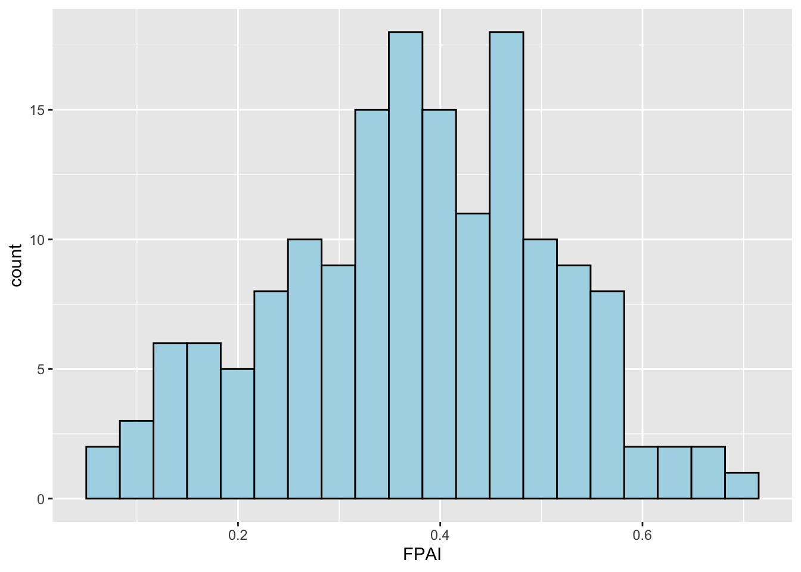
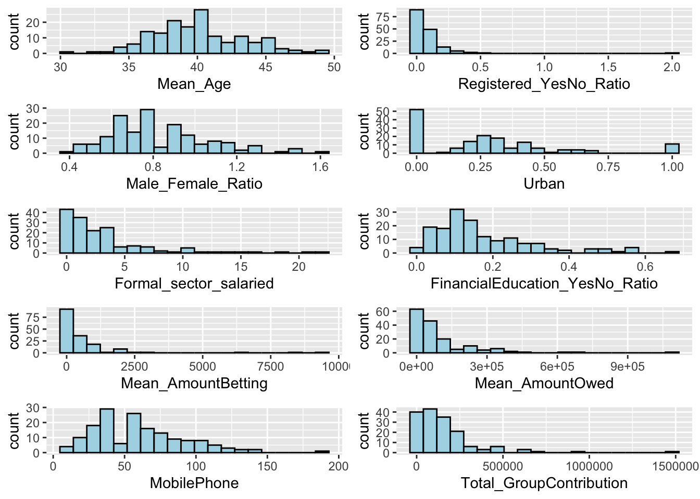
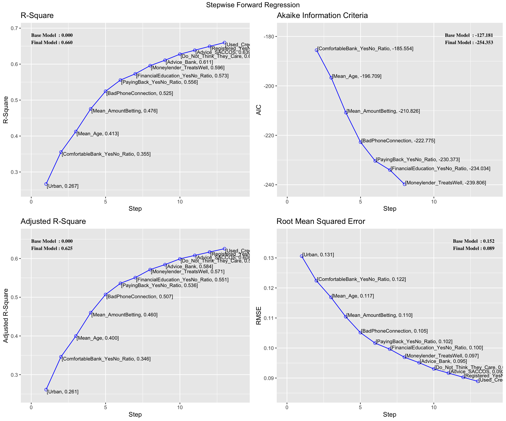
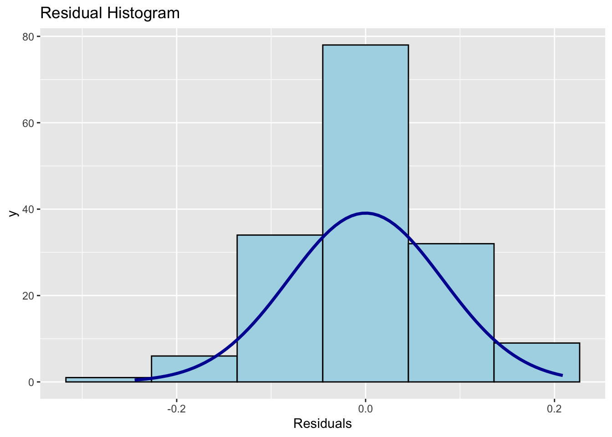
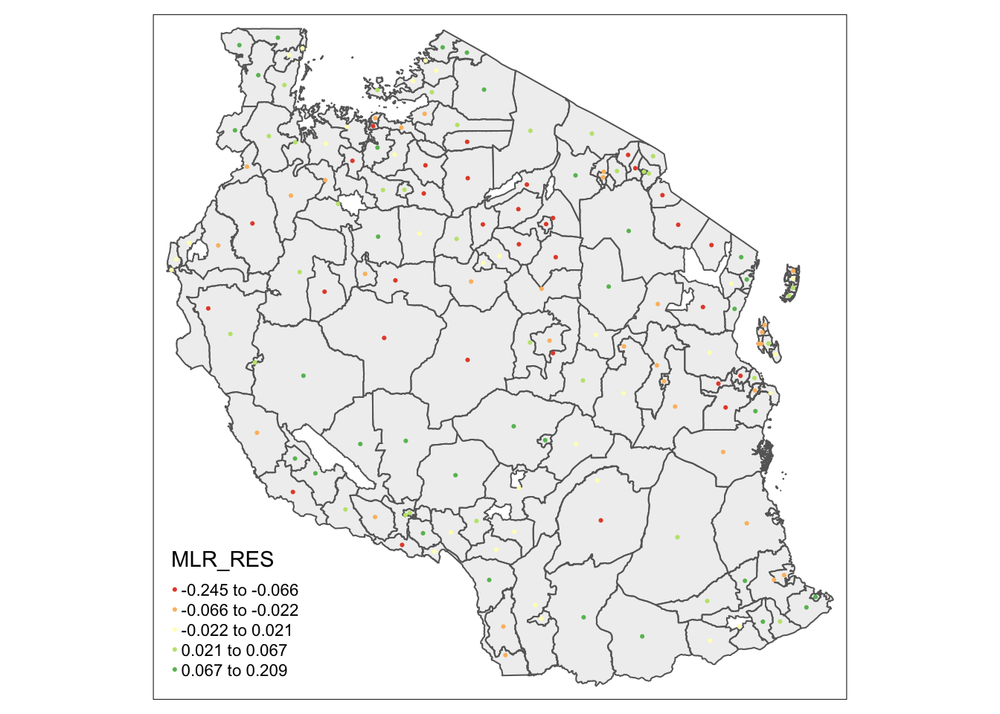
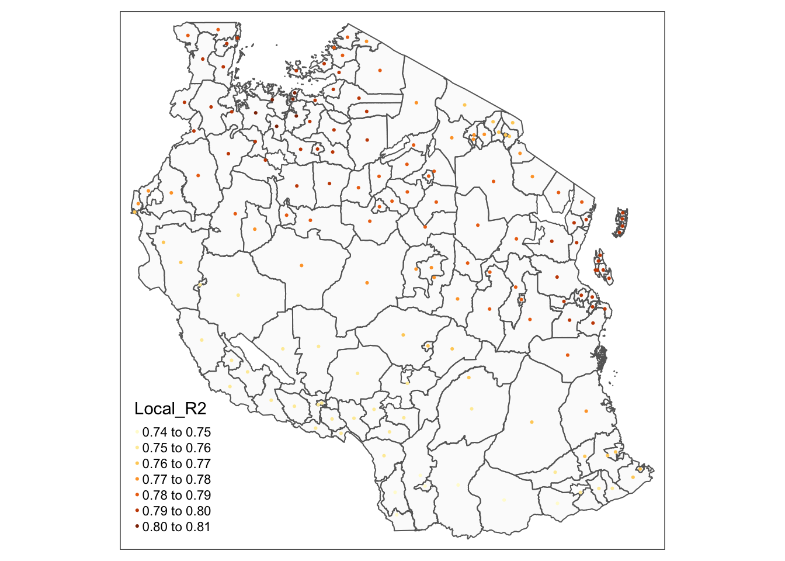

pacman::p_load(st,olsrr,e1071, ggstatsplot, ggpubr, sf, spdep, sfdep, GWmodel, tmap, tidyverse, gtsummary,see,performance,datawizard,gtsummary)Take Home Exercise 3: Modelling Geography of Financial Inclusion in Tanzania with Geographically Weighted Methods
1 Overview
1.1 Background
Financial inclusion plays a key role in promoting equitable economic growth by enabling individuals and businesses to access essential financial services such as banking, loans, insurance, and equity products. In Tanzania, financial inclusion initiatives have become a priority in addressing the needs of underserved populations, particularly those in rural or economically disadvantaged areas. These initiatives aim to improve household incomes, reduce income inequality, and foster inclusive economic participation by providing timely and affordable access to financial products and services(United Nations Capital Development Fund [UNCDF], 2024).
Despite significant progress in financial inclusion efforts, access to financial services is uneven across different geographical regions within Tanzania. Rural areas, particularly in districts with low levels of economic activity, often face greater challenges in accessing financial services compared to more urbanized districts. These spatial disparities raise important questions about the factors driving financial inclusion at the district level and how regional policies can be designed to promote more inclusive economic outcomes.
1.2 Objectives
This analysis aims to build an explanatory model using Multiple Linear Regression as well as Geographically Weighted Regression (GWR) to identify the key factors affecting financial inclusion across districts in Tanzania. By focusing on multiple socio-economic and infrastructural variables, this study will provide insights into how these factors vary geographically and influence financial access at a district level.
Specifically, the objectives are:
Identify Key Determinants: Determine the primary socio-economic and infrastructural factors that influence financial inclusion.
Examine Regional Variation: Explore how the effects of these factors vary across different districts, providing a localized understanding of financial inclusion.
2 Methodology
The explanatory model will be developed first using Multiple Linear Regression and Geographically Weighted Regression (GWR), which is a spatial extension of multiple linear regression that allows for localized variations in the relationships between predictors and the response variable—in this case, financial inclusion.
The process will follow these steps:
Defining dependent variable (y): Derive dependent variable which represents financial inclusion from the FinScope dataset.
Explanatory Variable Selection (x): Identify key predictor variables, both continuous and categorical, from the FinScope dataset. These will serve as explanatory variables in the model.
Model Building: Build the explanatory model using multiple linear regression techniques, enhanced by GWR to account for geographical variations. This will allow us to evaluate the influence of each predictor on financial inclusion across different districts.
Model Calibration and Validation: Calibrate the model to ensure that it effectively captures the localized relationships between financial inclusion and its determinants.
Spatial Visualization: Mapping the results of the GWR model to visualize how the effects of each factor vary geographically, will highlight districts where specific variables have a stronger or weaker influence on financial inclusion.
3 Loading R Packages
The following packages were used for this study:
| Package | Description |
|---|---|
| olsrr | For creating and evaluating ordinary least squares regression models. |
| ggstatsplot | for producing statistical visualizations that combine ggplot2 graphics with statistical results |
| e1071 | For checking skewness of variables |
| ggpubr | To create publication-ready visualizations with ggplot2 and arranging multiple plots |
| sf | For importing, managing, and handling geospatial data |
| sfdep | To analyze spatial relationships and incorporate them into regression models |
| spdep | For calculating spatial weights and conducting tests for spatial relationships |
| GWmodel | To explore spatially varying relationships between the dependent and independent variables |
| tmap | For thematic mapping, allowing us to visualize spatial data in an intuitive and aesthetically pleasing manner |
| tidyverse | For data manipulation, cleaning, and visualization |
| gtsummary | To create summary tables for regression results, providing a clear and concise presentation of model outputs |
| see | For visualizing model diagnostics and results |
| performance | For evaluating model performance and diagnostics |
| datawizard | To handle missing values, recode variables, and perform exploratory data analysis before modeling |
| gtsummary | To create publication ready summary tables |
4 Importing the Data
4.1 The Datasets
For this analysis, we will use two primary datasets: (1) FinScope Tanzania 2023, which provides district-level data on financial inclusion, and (2) district-level boundary GIS data from the geoBoundaries portal to facilitate spatial analysis.
FinScope Tanzania 2023: This dataset include comprehensive district-level data on access to financial services, covering indicators such as banking services, mobile money usage, savings, loans, and insurance. The dataset will be used to identify the key factors affecting financial inclusion and to develop the explanatory model.
District Boundary GIS Data: Geographic boundary data for the districts of Tanzania, sourced from the geoBoundaries, will enable us to link the financial inclusion data to specific geographic locations for spatial analysis using GWR.
4.2 Aspatial Data
The FinScope Tanzania dataset from 2023, was imported by using read_csv() package.
Then, the data was prepared for analysis with the following steps:
- We extract the columns with the variables chosen which will be explained in the Variable Selection section.
- Rename some district names to match the boundary dataset in section 4.3.
- Remove columns with all missing/NA values.
tanzania <- read_csv("data/rawdata/FinScope_Tanzania.csv") %>%
select(5, 9, 11, 13:14,16, 65:67, 95:103, 107:119, 125,
140, 142:151, 160:174, 177:178, 180, 183:192, 196, 215:223,
275:278, 294:306, 344:353, 361:372, 374:378, 395:397, 455:460,
495, 497, 507:529, 574:580, 591, 612, 650:651, 653, 655, 657,
678, 680:685, 697:698, 702:716, 718) %>%
mutate(dist_name = ifelse(dist_name == "Magharibi A", "Magharibi", dist_name),
dist_name = ifelse(dist_name == "Magharibi B", "Magharibi", dist_name),
dist_name = ifelse(dist_name == "Nyang'hwale", "Nyanghwale", dist_name),
dist_name = ifelse(dist_name == "Wanging'ombe", "Wangingombe", dist_name))%>%
select(where(~ !all(is.na(.))))We will use glimpse() to quickly check the attributes.
glimpse(tanzania)Lastly, we will save the prepared dataframe into rds format.
write_rds(tanzania, "data/rds/tanzania.rds")tanzania <- read_rds("data/rds/tanzania.rds")4.3 Geospatial Data - Study Area
The geo Boundaries of Tanzania dataset, was imported by using st_read() package.
The dataset was prepared for analysis with the following steps:
We note that Tanzania is in WGS 84/ UTM Zone 37S. We will use st_transform to reproject coordinate reference system to EPSG: 32737 for Tanzania.
To perform left join with the aspatial dataset, we need a common column - districts name. Therefore, we need to change the variable, shapeName, to ‘dist_name’ to make it a common variable with the FinScope Tanzania dataset.
To ensure the districts are common, some districts will be renamed from “Arusha Urban” to “Arusha” as the same way it was displayed in FinScope Tanzania dataset. Since the FinScope Tanzania dataset already have a variable that classifies if the surveyee is residing in an urban or rural area, we do not need to have a separate district with the title Urban as it falls under the same district.
We will also remove some district names that are not present in the FinScope Tanzania dataset.
tanzbounds <- st_read(dsn = "data/rawdata/",
layer = "geoBoundaries-TZA-ADM2",
crs=4326) %>%
st_transform(crs=32737) %>%
rename(dist_name = shapeName) %>%
mutate(dist_name = ifelse(dist_name == "Arusha Urban", "Arusha", dist_name)) %>%
mutate(dist_name = ifelse(dist_name == "Meru", "Arumeru", dist_name)) %>%
mutate(dist_name = ifelse(dist_name == "Iringa Urban","Iringa", dist_name)) %>%
mutate(dist_name = ifelse(dist_name == "Bukoba Urban", "Bukoba", dist_name)) %>%
mutate(dist_name = ifelse(dist_name == "Mpanda Urban", "Mpanda", dist_name)) %>%
mutate(dist_name = ifelse(dist_name == "Kigoma Urban", "Kigoma", dist_name)) %>%
mutate(dist_name = ifelse(dist_name == "Moshi Urban", "Moshi", dist_name))%>%
mutate(dist_name = ifelse(dist_name == "Lindi Urban", "Lindi", dist_name))%>%
mutate(dist_name = ifelse(dist_name == "Musoma Urban", "Musoma", dist_name))%>%
mutate(dist_name = ifelse(dist_name == "Mbeya Urban", "Mbeya", dist_name)) %>%
mutate(dist_name = ifelse(dist_name == "Babati UrbanBabati Urban", "Babati", dist_name)) %>%
mutate(dist_name = ifelse(dist_name == "Dodoma Urban", "Dodoma", dist_name))%>%
mutate(dist_name = ifelse(dist_name == "Kibaha Urban", "Kibaha", dist_name))%>%
mutate(dist_name = ifelse(dist_name == "Morogoro Urban", "Morogoro", dist_name))%>%
mutate(dist_name = ifelse(dist_name == "Mtwara Urban", "Mtwara", dist_name))%>%
mutate(dist_name = ifelse(dist_name == "Njombe Urban", "Njombe", dist_name))%>%
mutate(dist_name = ifelse(dist_name == "Mtwara Urban", "Mtwara", dist_name))%>%
mutate(dist_name = ifelse(dist_name == "Shinyanga Urban", "Shinyanga", dist_name))%>%
mutate(dist_name = ifelse(dist_name == "Singida Urban", "Singida", dist_name))%>%
mutate(dist_name = ifelse(dist_name == "Songea Urban", "Songea", dist_name))%>%
mutate(dist_name = ifelse(dist_name == "Sumbawanga Urban", "Sumbawanga", dist_name))%>%
mutate(dist_name = ifelse(dist_name == "Tabora Urban", "Tabora", dist_name))%>%
mutate(dist_name = ifelse(dist_name == "Tanga Urban", "Tanga", dist_name)) %>%
mutate(dist_name = ifelse(dist_name == "Nyang'hwale", "Nyanghwale", dist_name)) %>%
mutate(dist_name = ifelse(dist_name == "Wanging'ombe", "Wangingombe", dist_name)) %>%
mutate(dist_name = ifelse(dist_name == "Butiam", "Butiama", dist_name)) %>%
filter(!dist_name %in% c("Mafinga Township Authority", "Kasulu Township Authority", "Masasi Township Authority" , "Makambako Township Authority", "Kahama Township Authority", "Korogwe Township Authority", "Handeni Mji","Mafia","Tunduma","Korogwe")) %>%
select (-c("shapeISO","shapeID","shapeGroup","shapeType"))Reading layer `geoBoundaries-TZA-ADM2' from data source
`/Users/seesarhlakyi/Desktop/ssrhk/ISSS626-GAA/Take-home_Ex/Take-home_Ex03/data/rawdata'
using driver `ESRI Shapefile'
Simple feature collection with 170 features and 5 fields
Geometry type: MULTIPOLYGON
Dimension: XY
Bounding box: xmin: 29.58953 ymin: -11.76235 xmax: 40.44473 ymax: -0.983143
Geodetic CRS: WGS 84To ensure the study area is in the correct format, we will use st_crs to check.
st_crs(tanzbounds)Coordinate Reference System:
User input: EPSG:32737
wkt:
PROJCRS["WGS 84 / UTM zone 37S",
BASEGEOGCRS["WGS 84",
ENSEMBLE["World Geodetic System 1984 ensemble",
MEMBER["World Geodetic System 1984 (Transit)"],
MEMBER["World Geodetic System 1984 (G730)"],
MEMBER["World Geodetic System 1984 (G873)"],
MEMBER["World Geodetic System 1984 (G1150)"],
MEMBER["World Geodetic System 1984 (G1674)"],
MEMBER["World Geodetic System 1984 (G1762)"],
MEMBER["World Geodetic System 1984 (G2139)"],
ELLIPSOID["WGS 84",6378137,298.257223563,
LENGTHUNIT["metre",1]],
ENSEMBLEACCURACY[2.0]],
PRIMEM["Greenwich",0,
ANGLEUNIT["degree",0.0174532925199433]],
ID["EPSG",4326]],
CONVERSION["UTM zone 37S",
METHOD["Transverse Mercator",
ID["EPSG",9807]],
PARAMETER["Latitude of natural origin",0,
ANGLEUNIT["degree",0.0174532925199433],
ID["EPSG",8801]],
PARAMETER["Longitude of natural origin",39,
ANGLEUNIT["degree",0.0174532925199433],
ID["EPSG",8802]],
PARAMETER["Scale factor at natural origin",0.9996,
SCALEUNIT["unity",1],
ID["EPSG",8805]],
PARAMETER["False easting",500000,
LENGTHUNIT["metre",1],
ID["EPSG",8806]],
PARAMETER["False northing",10000000,
LENGTHUNIT["metre",1],
ID["EPSG",8807]]],
CS[Cartesian,2],
AXIS["(E)",east,
ORDER[1],
LENGTHUNIT["metre",1]],
AXIS["(N)",north,
ORDER[2],
LENGTHUNIT["metre",1]],
USAGE[
SCOPE["Engineering survey, topographic mapping."],
AREA["Between 36°E and 42°E, southern hemisphere between 80°S and equator, onshore and offshore. Kenya. Mozambique. Tanzania."],
BBOX[-80,36,0,42]],
ID["EPSG",32737]]Now we are ready to save the dataset.
write_rds(tanzbounds, "data/rds/tanzbounds.rds")tanzbounds<- read_rds("data/rds/tanzbounds.rds")5 Data Wrangling
In the development of a multiple linear regression model, the selection of appropriate variables is critical to ensuring the model’s accuracy and interpretability. This section focuses on the selection of both categorical and continuous variables that will serve as predictors in our regression analysis.
Initially, we will establish a preliminary set of variables based on theoretical foundations and previous empirical research from the 722 variables of FinScope Tanzania dataset.
5.1 Categorical Variables
We will employ one-hot encoding to transform categorical variables into a format suitable for regression modeling. One-hot encoding allows us to create binary columns for each category, enabling the regression model to assess the impact of each nominal variable effectively. This approach ensures that we capture the distinct effects of categorical factors on the dependent variable while maintaining the integrity of the data.
Before we further prepare our variables (which are in the form of survey questions), we will convert the column names into a more R-friendly format using make.names().
colnames(tanzania) <- make.names(colnames(tanzania))We will use the following variables and code chunk to one-hot encode all the nominal variables as mentioned above. Some one hot encoded columns will be used to derive continuous variables as well.
| Variable | Justification for Selection | Modification |
|---|---|---|
| Cluster type | To understand if there are any inequality across urban and rural areas | Encoded as two columns - ‘Urban’ and ‘Rural’ If respondent indicates ‘urban’, this variable will be 1 and 0 for rural. |
| Respondent gender | To understand the demographic background of respondent | Encoded as two columns - ‘male’ and ‘female’ |
| Education Background | To understand the demographic background of respondent | Encoded as eight columns - ‘NoFormalEducation’ and ‘SomePrimary’ and so on |
| Access to Mobile Phone, Internet and Laptop | To understand the socioeconomic status of respondent | Encoded as three columns - ‘MobilePhone’, ‘Internet’ and ‘Laptop’ |
| Financial Documents owned | To understand access to financial products | Encoded as ‘BankMFIStatement’,‘Lease’ and so on |
| Source of Money to Start Business | To understand access to financial support system; internal and external | Encoded as ‘MoneyforBusiness_BankLoan’ and so on |
| If Business is registered with government and if it is not, why | To understand business compliance | Encoded as two columns - ‘BusinessRegistered_Yes’ and ‘BusinessRegistered_No’ and for not registered business encoded as ‘NoTime’ or ‘NoMoney’ |
| Respondent’s main income source | To understand the socioeconomic status of respondent | Encoded as binary columns for each income type, such as Formal_sector_salaried, Traders_agriculatural_proudcts, etc. |
| Who they discuss their financial matters with | To understand social support networks | Encoded as 15 columns - ‘Advice_HouseholdMember’ and ‘Advice_Bank’ and so on. |
| What they did when they could not meet spending needs | To understand coping mechanisms | Encoded as 10 columns - ‘UsedSavings’ and ‘BorrowedFromBank’ |
| Whether respondent is comfortable with banks | To gauge trust in financial institutions | Encoded as ‘ComfortableWithBank_Yes’ and ‘ComfortableWithBank_No’ |
| Financial Education | To understand the respondent’s financial literacy | Encoded as ‘ReceivedFinancialEducation_Yes’ and ‘ReceivedFinancialEducation_No’ |
| Retirement plans | To understand future financial planning | Encoded as ‘Old_ChildrenWillTakeCareOfMe’ and ‘Old_Savings’ |
| Confidence in financial institutions | To understand perceptions of financial institutions | Encoded as “ConfidentWithBanks” and ‘ConfidentWithPensionFund’ and so on |
| If they are paying back money they owe within a year | To understand debt management | Encoded as PayingBack_Yes and PayingBack_No. |
| If they have borrowed money from any financial institutions | To understand access to credit | Encoded as binary columns for each financial institution type such as ‘BorrowedFrom_Bank’ and ‘BorrowedFrom_MFI’ |
| How often a respondent use the payment type for purchases | To understand spending habits | Encoded as binary columns for each payment type such as Used_Cash, Used_ATM, Used_CreditCard and so on. |
| Assistance from Government or NGO and problems they face receiving assistance | To understand reliance on assistance and issues | Encoded as binary columns such as ‘Basic_TASAF_Cash_Transfer ’ and ‘Money_Didnt_Come’ |
| Reporting problems regarding financial matters | To understand barriers in reporting issues | Encoded as binary columns such as ‘Do_Not_Know_Where_To_Go’ and ‘Do_Not_Think_They_Care’ |
| Confidence and Trust in Insurance Companies | To assess trust in insurance | Encoded as relevant indicators such as Trust_Insurance_Companies |
| Insurance ownership and type of insurance | To understand financial protection | Encoded as binary columns for each insurance type such as Motor_vehicle_insurance, Health_Insurance, etc. |
| If they have any issues accessing financial products | To understand barriers to access | Network_Failure and Agent_Absent |
| Access and relationship with moneylender | To understand trust and access to informal credit | Moneylender_Access and Moneylender_TreatsWell |
| If respondent is involved with a Bank, MFI, PENSION, INSURANCE, SACCO, CAPITAL Fund Managers, FORMAL INVESTMEN, CMG, INFORMAL MONEYLENDER or apart of a Social group | To assess engagement with financial institutions, microfinance, pension and so on. | Encoded as Banked and Not_Banked, MFI and Not_MFI and so on. Encoded as financialaccess_count( checks if respondent have access to at least one financial product (set as 1 if they have access to any, 0 if they don’t). |
tanzania_onehotencoded<- tanzania %>%
mutate(
Urban = ifelse(`Cluster.type` == "Urban", 1, 0),
Rural = ifelse(`Cluster.type` == "Rural", 1, 0)) %>%
mutate(
Male = ifelse(`C9..Respondent.gender.Interviewer.to.observe` == "Male", 1, 0),
Female = ifelse(`C9..Respondent.gender.Interviewer.to.observe` == "Female", 1, 0))%>%
mutate(
NoFormalEducation = ifelse(`C11..Highest.level.of.education.completed..Can.read.out` == "No formal education", 1, 0),
SomePrimary = ifelse(`C11..Highest.level.of.education.completed..Can.read.out` == "Some primary", 1, 0),
PrimaryCompleted = ifelse(`C11..Highest.level.of.education.completed..Can.read.out` == "Primary completed", 1, 0),
PostPrimaryTechnicalTraining = ifelse(`C11..Highest.level.of.education.completed..Can.read.out` == "Post primary technical training", 1, 0),
SomeSecondary = ifelse(`C11..Highest.level.of.education.completed..Can.read.out` == "Some secondary", 1, 0),
SecondaryCompleted_OLevel = ifelse(`C11..Highest.level.of.education.completed..Can.read.out` == "Secondary competed-O level", 1, 0),
SomeUniversityOrHigherEducation = ifelse(`C11..Highest.level.of.education.completed..Can.read.out` == "Some University or other higher education", 1, 0),
UniversityOrHigherEducationCompleted = ifelse(`C11..Highest.level.of.education.completed..Can.read.out` == "University or higher education completed", 1, 0))%>%
mutate(
MobilePhone = ifelse(`C23..Which.of.the.following.do.you.have.access..to..Mobile.phone` == "Yes", 1, 0),
Internet = ifelse(`C23..Which.of.the.following.do.you.have.access..to..Internet` == "Yes", 1, 0),
Laptop = ifelse(`C23..Which.of.the.following.do.you.have.access..to..Laptop.or.desktop.or.tablet` == "Yes", 1, 0))%>%
mutate(
BankMFIStatement = ifelse(`C27..Which.of.the.following.documents.do.you.currently.have.in.your.name..Bank.MFI.Statement`== "Yes",1,0),
Lease = ifelse(`C27..Which.of.the.following.documents.do.you.currently.have.in.your.name..Lease.rental.agreement.for.house.vehicle.`== "Yes",1,0),
Subscription = ifelse(`C27..Which.of.the.following.documents.do.you.currently.have.in.your.name..Subscription`== "Yes",1,0),
TaxIDNumber = ifelse(`C27..Which.of.the.following.documents.do.you.currently.have.in.your.name..Tax.ID.Number..TIN.`== "Yes",1,0),
InsurancePolicy = ifelse(`C27..Which.of.the.following.documents.do.you.currently.have.in.your.name..Insurance.Policy`== "Yes",1,0),
PaySlip = ifelse(`C27..Which.of.the.following.documents.do.you.currently.have.in.your.name..Pay.slip.from.employer`== "Yes",1,0),
TitleDeed = ifelse(`C27..Which.of.the.following.documents.do.you.currently.have.in.your.name..Title.deed`== "Yes",1,0),
CertofOccupancy = ifelse(`C27..Which.of.the.following.documents.do.you.currently.have.in.your.name..Certificate.of.customary.rights.of.occupancy..CCRO.`== "Yes",1,0),
InsuranceCard = ifelse(`C27..Which.of.the.following.documents.do.you.currently.have.in.your.name..Insurance.card`== "Yes",1,0)
) %>%
mutate(
MoneyforBusiness_BankLoan = ifelse(`X5b.Where.did.you.get.most.of.the.money.from.to.start.your.business.` == "Loan from bank or MFIs", 1, 0),
MoneyforBusiness_SACCOSLoan = ifelse(`X5b.Where.did.you.get.most.of.the.money.from.to.start.your.business.` == "Loan from SACCOS", 1, 0),
MoneyforBusiness_CMGSLoan = ifelse(`X5b.Where.did.you.get.most.of.the.money.from.to.start.your.business.` == "Loan from CMGs", 1, 0),
MoneyforBusiness_FamilyFriendsLoan = ifelse(`X5b.Where.did.you.get.most.of.the.money.from.to.start.your.business.` == "Loan from family/friends", 1, 0),
MoneyforBusiness_FamilyFriendsGift = ifelse(`X5b.Where.did.you.get.most.of.the.money.from.to.start.your.business.` == "Gift from family/friends", 1, 0),
MoneyforBusiness_Inheritance = ifelse(`X5b.Where.did.you.get.most.of.the.money.from.to.start.your.business.` == "From Inheritance", 1, 0),
MoneyforBusiness_SaleOfAssets = ifelse(`X5b.Where.did.you.get.most.of.the.money.from.to.start.your.business.` == "Sale of assets owned", 1, 0),
MoneyforBusiness_SavingsOrSalary = ifelse(`X5b.Where.did.you.get.most.of.the.money.from.to.start.your.business.` == "Saving/Salary", 1, 0)
) %>%
mutate(
BusinessRegistered_Yes = ifelse(`X6.4a.Is.your.business.registered.with.any.government.authority.` == "Yes", 1, 0),
BusinessRegistered_No = ifelse(`X6.4a.Is.your.business.registered.with.any.government.authority.` == "No", 1, 0)
) %>%
mutate(
'TriedButNot' = ifelse(`X6.4c.Please.tell.me.why.you.have.not.registered.this.business..Tried.but.was.not` == "Yes", 1, 0),
NoTime = ifelse(`X6.4c.Please.tell.me.why.you.have.not.registered.this.business..Don.t.have.time` == "Yes", 1, 0),
NoMoney = ifelse(`X6.4c..Why.you.have.not.registered.this.business..Dont.have.money` == "Yes", 1, 0),
TooComplicated = ifelse(`X6.4c.Please.tell.me.why.you.have.not.registered.this.business..It.is.too.complicated` == "Yes", 1, 0),
NoBenefit = ifelse(`X6.4c.Please.tell.me.why.you.have.not.registered.this.business..No.benefit` == "Yes", 1, 0),
BusinessTooSmall = ifelse(`X6.4c.Please.tell.me.why.you.have.not.registered.this.business..Business.is.too.small` == "Yes", 1, 0),
NoPayment = ifelse(`X6.4c..Why.you.have.not.registered.this.business..Don.t.want.to.pay` == "Yes", 1, 0),
DontKnowHow = ifelse(`X6.4c.Please.tell.me.why.you.have.not.registered.this.business..Dontt.know.how` == "Yes", 1, 0),
RegistrationInProcess = ifelse(`X6.4c.Please.tell.me.why.you.have.not.registered.this.business..Registration.is.being.processed` == "Yes", 1, 0))%>%
mutate(
Formal_sector_salaried = ifelse(Main.Income.Source == "Formal sector salaried", 1, 0),
Informal_sector_salaried = ifelse(Main.Income.Source == "Informal sector salaried", 1, 0),
Farmers_and_fishers_Inncome = ifelse(Main.Income.Source == "Farmers and fishers", 1, 0),
Traders_agricultural_products_Income = ifelse(Main.Income.Source == "Traders - agricultural products", 1, 0),
Traders_non_agricultural_Income = ifelse(Main.Income.Source == "Traders - non-agricultural", 1, 0),
Service_providers_Income = ifelse(Main.Income.Source == "Service providers", 1, 0),
Piece_work_casual_labor_Income = ifelse(Main.Income.Source == "Piece work/casual labor", 1, 0),
Rental_Income = ifelse(Main.Income.Source == "Rental income", 1, 0),
Interest_from_savings_investments_stocks_unit_trusts = ifelse(Main.Income.Source == "Interest from savings, investments, stocks, unit trusts etc.", 1, 0),
Pension_Income = ifelse(Main.Income.Source == "Pension", 1, 0),
Welfare_Income = ifelse(Main.Income.Source == "Welfare", 1, 0),
Gambling_Income = ifelse(Main.Income.Source == "Gambling", 1, 0),
Dependents_Income = ifelse(Main.Income.Source == "Dependents", 1, 0),
OtherIncome = ifelse(Main.Income.Source == "Other", 1, 0)
)%>%
mutate(
Advice_HouseholdMember = ifelse(`E.3.3..Who.do.you.talk.with.for.advice.about.money.matters..A.household.member` == "Yes", 1, 0),
Advice_FamilyMember = ifelse(`E.3.3..Who.do.you.talk.with.for.advice.about.money.matters..Another.family.member` == "Yes", 1, 0),
Advice_Employer = ifelse(`E.3.3..Who.do.you.talk.with.for.advice.about.money.matters..Employer` == "Yes", 1, 0),
Advice_Bank = ifelse(`E.3.3..Who.do.you.talk.with.for.advice.about.money.matters..Bank` == "Yes", 1, 0),
Advice_Microfinance = ifelse(`E.3.3..Who.do.you.talk.with.for.advice.about.money.matters..Microfinance.institution` == "Yes", 1, 0),
Advice_SACCOS = ifelse(`E.3.3..Who.do.you.talk.with.for.advice.about.money.matters..Savings.and.credit.cooperative..SACCOS.` == "Yes", 1, 0),
Advice_FinancialAdvisor = ifelse(`E.3.3..Who.do.you.talk.with.for.advice.about.money.matters..Financial.advisor` == "Yes", 1, 0),
Advice_FarmersAssociation = ifelse(`E.3.3..Who.do.you.talk.with.for.advice.about.money.matters..Farmers.association` == "Yes", 1, 0),
Advice_BusinessAssociation = ifelse(`E.3.3..Who.do.you.talk.with.for.advice.about.money.matters..Business.association` == "Yes", 1, 0),
Advice_SavingsGroup = ifelse(`E.3.3..Who.do.you.talk.with.for.advice.about.money.matters..Savings.group` == "Yes", 1, 0),
Advice_Moneylender = ifelse(`E.3.3..Who.do.you.talk.with.for.advice.about.money.matters..Moneylender.in.community` == "Yes", 1, 0),
Advice_GovernmentOfficial = ifelse(`E.3.3..Who.do.you.talk.with.for.advice.about.money.matters..Government.official` == "Yes", 1, 0),
Advice_VillageElder = ifelse(`E.3.3..Who.do.you.talk.with.for.advice.about.money.matters..Village.elder.elder` == "Yes", 1, 0),
Advice_OtherSpecify = ifelse(`E.3.3..Who.do.you.talk.with.for.advice.about.money.matters..Other.specify` == "Yes", 1, 0),
Advice_NoOne = ifelse(`E.3.3..Who.do.you.talk.with.for.advice.about.money.matters..I.do.not.speak.with.anyone` == "Yes", 1, 0)
)%>%
mutate(
UsedSavings = ifelse(`E.7.N.1..Last.12.months...what.did.you.do.when.you.couldn.t.meet.your.regular.spending.needs._Used.savings` == "Yes", 1, 0),
BorrowedFromBank = ifelse(`E.7.N.1..Last.12.months...what.did.you.do.when.you.couldn.t.meet.your.regular.spending.needs._Borrowed.from.a.bank.MFI.SACCO` == "Yes", 1, 0),
BorrowedThroughMM = ifelse(`E.7.N.1..Last.12.months...what.did.you.do.when.you.couldn.t.meet.your.regular.spending.needs._Borrowed.money.through.MM` == "Yes", 1, 0),
BorrowedFromMoneyLender = ifelse(`E.7.N.1..Last.12.months...what.did.you.do.when.you.couldn.t.meet.your.regular.spending.needs._Borrowed.from.money.lender` == "Yes", 1, 0),
BorrowedFromFriendFamily = ifelse(`E.7.N.1..Last.12.months...what.did.you.do.when.you.couldn.t.meet.your.regular.spending.needs._Borrowed.from.friend.family.community` == "Yes", 1, 0),
GotAssistanceFromFamily = ifelse(`E.7.N.1..Last.12.months...what.did.you.do.when.you.couldn.t.meet.your.regular.spending.needs._Got.assistance.from.family.friends.community..that.I.did.not.need.to.repay.` == "Yes", 1, 0),
SoldLivestock = ifelse(`E.7.N.1..Last.12.months...what.did.you.do.when.you.couldn.t.meet.your.regular.spending.needs._Sold.livestock` == "Yes", 1, 0),
CutSpending = ifelse(`E.7.N.1..Last.12.months...what.did.you.do.when.you.couldn.t.meet.your.regular.spending.needs._Cut.spending` == "Yes", 1, 0),
WorkedMore = ifelse(`E.7.N.1..Last.12.months...what.did.you.do.when.you.couldn.t.meet.your.regular.spending.needs._Worked.more` == "Yes", 1, 0),
Others_CouldntMeetNeeds = ifelse(`E.7.N.1..Last.12.months...what.did.you.do.when.you.couldn.t.meet.your.regular.spending.needs._Others` == "Yes", 1, 0)
)%>%
mutate(
ComfortableWithBank_Yes = ifelse(`E.5.1..You.feel.comfortable.to.go.into.a.bank.or.another.financial.institution` == "TRUE", 1, 0),
ComfortableWithBank_No = ifelse(`E.5.1..You.feel.comfortable.to.go.into.a.bank.or.another.financial.institution` == "FALSE", 1, 0), ReceivedFinancialEducation_Yes = ifelse(`E.5.2..You.have.received.some.financial.education.in.your.life` == "TRUE", 1, 0),
ReceivedFinancialEducation_No = ifelse(`E.5.2..You.have.received.some.financial.education.in.your.life` == "FALSE", 1, 0),
Old_Savings = ifelse(`E.10..How.will.you.mainly.ensure.that.you.have.money.to.meet.your.needs.when.you.are.old.and.can.no.longer.work.` == "Savings", 1, 0),
Old_ChildrenWillTakeCareOfMe = ifelse(`E.10..How.will.you.mainly.ensure.that.you.have.money.to.meet.your.needs.when.you.are.old.and.can.no.longer.work.` == "Children will take care of me", 1, 0),
Old_MoneyFromFriendsRelatives = ifelse(`E.10..How.will.you.mainly.ensure.that.you.have.money.to.meet.your.needs.when.you.are.old.and.can.no.longer.work.` == "Money from friends/relatives", 1, 0),
Old_LandProperty = ifelse(`E.10..How.will.you.mainly.ensure.that.you.have.money.to.meet.your.needs.when.you.are.old.and.can.no.longer.work.` == "Land/property", 1, 0),
Old_OwnBusiness = ifelse(`E.10..How.will.you.mainly.ensure.that.you.have.money.to.meet.your.needs.when.you.are.old.and.can.no.longer.work.` == "Own business", 1, 0),
Old_RentalIncome = ifelse(`E.10..How.will.you.mainly.ensure.that.you.have.money.to.meet.your.needs.when.you.are.old.and.can.no.longer.work.` == "Rental income", 1, 0),
Old_DividendsFromShares = ifelse(`E.10..How.will.you.mainly.ensure.that.you.have.money.to.meet.your.needs.when.you.are.old.and.can.no.longer.work.` == "Dividends from shares", 1, 0),
Old_FarmingAgricultureLivestock = ifelse(`E.10..How.will.you.mainly.ensure.that.you.have.money.to.meet.your.needs.when.you.are.old.and.can.no.longer.work.` == "Farming/agriculture/livestock", 1, 0),
Old_Pension = ifelse(`E.10..How.will.you.mainly.ensure.that.you.have.money.to.meet.your.needs.when.you.are.old.and.can.no.longer.work.` == "Pension", 1, 0),
Old_InsurancePolicy = ifelse(`E.10..How.will.you.mainly.ensure.that.you.have.money.to.meet.your.needs.when.you.are.old.and.can.no.longer.work.` == "Insurance policy", 1, 0),
Old_NoPlans = ifelse(`E.10..How.will.you.mainly.ensure.that.you.have.money.to.meet.your.needs.when.you.are.old.and.can.no.longer.work.` == "Don’t know/Have no plans/Have not yet thought about how/where I would get the money for this purpose", 1, 0),
ConfidentWithBanks = ifelse(`F.3.2.1..I.will.read.for.you.a.list.of.institutions..and.pease.tell.me.which.you.feel.confident.with.SAVINGS.your.money.with._Banks` == "Yes", 1, 0),
ConfidentWithMFIs = ifelse(`F.3.2.1..I.will.read.for.you.a.list.of.institutions..and.pease.tell.me.which.you.feel.confident.with.SAVINGS.your.money.with._MFIs` == "Yes", 1, 0),
ConfidentWithSACCOs = ifelse(`F.3.2.1..I.will.read.for.you.a.list.of.institutions..and.pease.tell.me.which.you.feel.confident.with.SAVINGS.your.money.with._SACCOs` == "Yes", 1, 0),
ConfidentWithMobileMoney = ifelse(`F.3.2.1..I.will.read.for.you.a.list.of.institutions..and.pease.tell.me.which.you.feel.confident.with.SAVINGS.your.money.with._Mobile.money.operators` == "Yes", 1, 0),
ConfidentWithPensionFund = ifelse(`F.3.2.1..I.will.read.for.you.a.list.of.institutions..and.pease.tell.me.which.you.feel.confident.with.SAVINGS.your.money.with._Pension.fund` == "Yes", 1, 0),
ConfidentWithSavingsGroups = ifelse(`F.3.2.1..I.will.read.for.you.a.list.of.institutions..and.pease.tell.me.which.you.feel.confident.with.SAVINGS.your.money.with._Savings.groups.CMGs` == "Yes", 1, 0),
ConfidentWithFamilyFriends = ifelse(`F.3.2.1..I.will.read.for.you.a.list.of.institutions..and.pease.tell.me.which.you.feel.confident.with.SAVINGS.your.money.with._Family.friends` == "Yes", 1, 0),
ConfidentWithUTTs = ifelse(`F.3.2.1..I.will.read.for.you.a.list.of.institutions..and.pease.tell.me.which.you.feel.confident.with.SAVINGS.your.money.with._UTTs` == "Yes", 1, 0),
PayingBack_Yes = ifelse(`G.2.4..Have.you..in.the.past.12.months..been.paying.back.money.that.you.borrowed.` == "Yes", 1, 0),
PayingBack_No = ifelse(`G.2.4..Have.you..in.the.past.12.months..been.paying.back.money.that.you.borrowed.` == "No", 1, 0),
BorrowedFrom_Bank = ifelse(`G.5.2.Did.you.borrow.money.from.the.following..Bank` == "Yes", 1, 0),
BorrowedFrom_MFI = ifelse(`G.5.2.Did.you.borrow.money.from.the.following..Microfinance.institution.such.as` == "Yes", 1, 0),
BorrowedFrom_SACCO = ifelse(`G.5.2.Did.you.borrow.money.from.the.following..SACCOS` == "Yes", 1, 0),
BorrowedFrom_MobileMoney = ifelse(`G.5.2.Did.you.borrow.money.from.the.following..A.mobile.money.service.provider` == "Yes", 1, 0),
BorrowedFrom_PensionFund = ifelse(`G.5.2.Did.you.borrow.money.from.the.following..A.pension.fund` == "Yes", 1, 0),
BorrowedFrom_Employer = ifelse(`G.5.2.Did.you.borrow.money.from.the.following..Your.employer` == "Yes", 1, 0),
BorrowedFrom_Family_PayBack = ifelse(`G.5.2.Did.you.borrow.money.from.the.following..Family.friends.that.you.had.to.pay.back` == "Yes", 1, 0),
BorrowedFrom_Family_NoPayBack = ifelse(`G.5.2.Did.you.borrow.money.from.the.following..Family.friends.that.you.did.not.have.to.pay.back` == "Yes", 1, 0),
BorrowedFrom_SavingsGroup = ifelse(`G.5.2.Did.you.borrow.money.from.the.following..Savings.group` == "Yes", 1, 0),
BorrowedFrom_CommunityLender = ifelse(`G.5.2.Did.you.borrow.money.from.the.following..Someone.in.the.community.who.lend` == "Yes", 1, 0),
BorrowedFrom_OtherSource = ifelse(`G.5.2.Did.you.borrow.money.from.the.following..Did.you.borrow.money.from.another.source` == "Yes", 1, 0),
Used_Cash = ifelse(`X2.1.In.the.past.12.months..how.often.did.you.use.the.Cash.for.purchases.of.goods` == "Yes", 1, 0),
Used_ATM_DebitCard = ifelse(`X2.2.In.the.past.12.months..how.often.did.you.use.the.ATM...Debit.card.for.purchases.of.goods` == "Yes", 1, 0),
Used_Cash = ifelse(`X2.1.In.the.past.12.months..how.often.did.you.use.the.Cash.for.purchases.of.goods` == "Never", 0, 1),
Used_ATM_DebitCard = ifelse(`X2.2.In.the.past.12.months..how.often.did.you.use.the.ATM...Debit.card.for.purchases.of.goods` == "Never", 0, 1),
Used_CreditCard = ifelse(`X2.3.In.the.past.12.months..how.often.did.you.use.the.Credit.card.for.purchases.of.goods` == "Never", 0, 1),
Used_BankTransfer = ifelse(`X2.4.In.the.past.12.months..how.often.did.you.use.the.Bank.transfer.for.purchases.of.goods` == "Never", 0, 1),
Used_MobileMoney = ifelse(`X2.5.In.the.past.12.months..how.often.did.you.use.the.Mobile.money.for.purchases.of.goods` == "Never", 0, 1),
Used_Cryptocurrency = ifelse(`X2.6.In.the.past.12.months..how.often.did.you.use.the.Cryptocurrency.for.purchases.of.goods` == "Never", 0, 1),
Used_QR_Code = ifelse(`X3.1.In.the.past.12.months..how.often.did.you.use.the.QR.code..for.purchases.of.goods` == "Never", 0, 1),
Used_POS = ifelse(`X3.2.In.the.past.12.months..how.often.did.you.use.the.POS.for.purchases.of.goods` == "Never", 0, 1),
Used_LipaNamba = ifelse(`X3.3.In.the.past.12.months..how.often.did.you.use.the.Lipa.Namba.for.purchases.of.goods` == "Never", 0, 1),
Used_AZAMPay = ifelse(`X3.4.In.the.past.12.months..how.often.did.you.use.the.AZAM.Pay.for.purchases.of.goods` == "Never", 0, 1),
Basic_TASAF_Cash_Transfer = ifelse(`X1..You.indicated.earlier.that.you.get.assistance.from.Government.or.NGO..please.tell.me.which...Basic.TASAF.cash.transfer` == "Yes", 1, 0),
Additional_Conditional_TASAF_Cash_Transfer = ifelse(`X1..You.indicated.earlier.that.you.get.assistance.from.Government.or.NGO..please.tell.me.which...Additional.Conditional.TASAF.cash.transfer` == "Yes", 1, 0),
Pension_for_Elders = ifelse(`X1..You.indicated.earlier.that.you.get.assistance.from.Government.or.NGO..please.tell.me.which...Pension.for.elders..Znz.only.` == "Yes", 1, 0),
Others_Assistance = ifelse(`X1..You.indicated.earlier.that.you.get.assistance.from.Government.or.NGO..please.tell.me.which...Others` == "Yes", 1, 0),
Payment_Was_Late = ifelse(`X2.Please.tell.me.which.of.the.following.problems.do.you.experience.with.these.payments._Payment.was.late` == "Yes", 1, 0),
Gave_Money_To_Official = ifelse(`X2.Please.tell.me.which.of.the.following.problems.do.you.experience.with.these.payments._You.had.to.give.money.to.an.official` == "Yes", 1, 0),
Money_Didnt_Come = ifelse(`X2.Please.tell.me.which.of.the.following.problems.do.you.experience.with.these.payments._Money.didn.t.come.at.all` == "Yes", 1, 0),
Received_Less_Money = ifelse(`X2.Please.tell.me.which.of.the.following.problems.do.you.experience.with.these.payments._You.received.less.money.than.should.have` == "Yes", 1, 0),
Household_Not_On_Register = ifelse(`X2.Please.tell.me.which.of.the.following.problems.do.you.experience.with.these.payments._Your.household.not.on.the.register` == "Yes", 1, 0),
Unable_To_Collection_Point = ifelse(`X2.Please.tell.me.which.of.the.following.problems.do.you.experience.with.these.payments._You.were.not.able.to.go.to.the.collection.point.and.you.didn.t.get.the.payment` == "Yes", 1, 0),
No_Proof_Of_Identity = ifelse(`X2.Please.tell.me.which.of.the.following.problems.do.you.experience.with.these.payments._You.didn.t.have.proof.of.identity.and.didn.t.g.et.the.money` == "Yes", 1, 0),
Do_Not_Know_Where_To_Go = ifelse(`J1.7.Why.don.t.you.report.problems..I.do.not.know.where.to.go` == "Yes", 1, 0),
Places_Not_In_My_Area = ifelse(`J1.7.Why.don.t.you.report.problems..The.places.are.not.in.my.area` == "Yes", 1, 0),
Do_Not_Think_They_Care = ifelse(`J1.7.Why.don.t.you.report.problems..I.do.not.think.they.care.about` == "Yes", 1, 0),
Trust_Insurance_Companies = ifelse(`X1.3.Please.tell.me.which.of.the.following.you.is.true.for.you...You.trust.insurance.companies.to.pay.out.when.something.does.go.wrong` == "Yes", 1, 0),
Insurance_Good_Idea = ifelse(`X1.3.Please.tell.me.which.of.the.following.you.is.true.for.you...Insurance.is.a.good.idea.for.everyone` == "Yes", 1, 0),
Need_Insurance = ifelse(`X1.3.Please.tell.me.which.of.the.following.you.is.true.for.you...You.don.t.need.insurance.as.you.get.money.if.things.go.wrong` == "Yes", 1, 0),
Have_Insurance_Cover = ifelse(`X2.Do.you.have.insurance.cover.` == "Yes", 1, 0),
Motor_Vehicle_Insurance = ifelse(`X3.1.1.Please.tell.me.which.of.the.following.you.have..Motor.vehicle.insurance` == "Yes", 1, 0),
Households_Contents_Insurance = ifelse(`X3.1.1.Please.tell.me.which.of.the.following.you.have..Households.contents.insura` == "Yes", 1, 0),
Private_Health_Insurance = ifelse(`X3.1.1.Please.tell.me.which.of.the.following.you.have..Private.health.insurance` == "Yes", 1, 0),
National_Health_Insurance = ifelse(`X3.1.1.Please.tell.me.which.of.the.following.you.have..National.health.insurance` == "Yes", 1, 0),
Community_Health_Insurance = ifelse(`X3.1.1.Please.tell.me.which.of.the.following.you.have..Community.health.insurance` == "Yes", 1, 0),
TIKA_Insurance = ifelse(`X3.1.1.Please.tell.me.which.of.the.following.you.have..TIKA..Tiba.Kwa.Kadi.` == "Yes", 1, 0),
Social_Health_Insurance = ifelse(`X3.1.1.Please.tell.me.which.of.the.following.you.have..Social.Health.Insurance.Be` == "Yes", 1, 0),
Personal_Accident_Insurance = ifelse(`X3.1.1.Please.tell.me.which.of.the.following.you.have..Personal.accident.insuranc` == "Yes", 1, 0),
Life_Insurance = ifelse(`X3.1.1.Please.tell.me.which.of.the.following.you.have..Life.insurance` == "Yes", 1, 0),
Loan_Insurance = ifelse(`X3.1.1.Please.tell.me.which.of.the.following.you.have..Loan.insurance.in.case.of` == "Yes", 1, 0),
Building_Insurance = ifelse(`X3.1.1.Please.tell.me.which.of.the.following.you.have..Building.insurance` == "Yes", 1, 0),
Education_Policy = ifelse(`X3.1.1.Please.tell.me.which.of.the.following.you.have..Education.policy` == "Yes", 1, 0),
Funeral_Cover = ifelse(`X3.1.1.Please.tell.me.which.of.the.following.you.have..Funeral.cover` == "Yes", 1, 0),
Agricultural_Insurance = ifelse(`X3.1.1.Please.tell.me.which.of.the.following.you.have..Agricultural.insurance` == "Yes", 1, 0),
Ushirika_Afya = ifelse(`X3.1.1.Please.tell.me.which.of.the.following.you.have..Ushirika.afya` == "Yes", 1, 0),
Motorcycle_Insurance = ifelse(`X3.1.1.Please.tell.me.which.of.the.following.you.have..Motorcycle.insurance` == "Yes", 1, 0),
Livestock_Insurance = ifelse(`X3.1.1.Please.tell.me.which.of.the.following.you.have..Livestock.insurance` == "Yes", 1, 0),
Other_Insurance_Products = ifelse(`X3.1.1.Please.tell.me.which.of.the.following.you.have..Any.other.insurance.produc` == "Yes", 1, 0),
Network_Failure = ifelse(`X10.1.In.the.past.12.months.have.you.experienced.any.of.the.following.when.you.wanted.to.use.mobile.money._Network.failure` == "Yes", 1, 0),
Agent_Absent = ifelse(`X10.1.In.the.past.12.months.have.you.experienced.any.of.the.following.when.you.wanted.to.use.mobile.money._Agent.absent.not.available` == "Yes", 1, 0),
Agent_No_Cash_Float = ifelse(`X10.1.In.the.past.12.months.have.you.experienced.any.of.the.following.when.you.wanted.to.use.mobile.money._Agent.didn.t.have.enough.cash.float` == "Yes", 1, 0),
Agent_Overcharged = ifelse(`X10.1.In.the.past.12.months.have.you.experienced.any.of.the.following.when.you.wanted.to.use.mobile.money._Agent.overcharged.for.transactions` == "Yes", 1, 0),
Lost_Money = ifelse(`X10.1.In.the.past.12.months.have.you.experienced.any.of.the.following.when.you.wanted.to.use.mobile.money._Lost.money` == "Yes", 1, 0),
Agent_Requested_PIN = ifelse(`X10.1.In.the.past.12.months.have.you.experienced.any.of.the.following.when.you.wanted.to.use.mobile.money._Agent.wanted.you.to.reveal.your.PIN.number` == "Yes", 1, 0),
Other_Problems = ifelse(`X10.1.In.the.past.12.months.have.you.experienced.any.of.the.following.when.you.wanted.to.use.mobile.money._Any.other.problem` == "Yes", 1, 0),
Moneylender_Access = ifelse(`X4b.Please.tell.me.which.of.the.following.statements.you.agree.with..You.can.use.or.access.your.moneylender.whenever.you.need.to` == "Yes", 1, 0),
Moneylender_TreatsWell = ifelse(`X4b.Please.tell.me.which.of.the.following.statements.you.agree.with..Your.moneylender.always.treats.you.well` == "Yes", 1, 0),
Moneylender_InfoClear = ifelse(`X4b.Please.tell.me.which.of.the.following.statements.you.agree.with..Before.you.took.out.a.loan.with.your.moneylender..you.got.as.much.info.as.needed.and.it.was.easy.to.understand` == "Yes", 1, 0),
Moneylender_NeedsMet = ifelse(`X4b.Please.tell.me.which.of.the.following.statements.you.agree.with..The.products.and.services.offered.by.your.moneylender.meets.your.financial.needs` == "Yes", 1, 0),
Moneylender_FeesReasonable = ifelse(`X4b.Please.tell.me.which.of.the.following.statements.you.agree.with..Your.moneylender.s.fees.and.charges.are.reasonable` == "Yes", 1, 0),
Moneylender_CustomerSupport = ifelse(`X4b.Please.tell.me.which.of.the.following.statements.you.agree.with..You.are.satisfied.with.your.moneylender.s.customer.support` == "Yes", 1, 0),
Banked = ifelse(Banked == "Banked", 1, 0),
MFI = ifelse(MFI == "MFI", 1, 0),
PENSION = ifelse(PENSION == "PENSION", 1, 0),
INSURANCE = ifelse(INSURANCE == "INSURANCE", 1, 0),
SACCO = ifelse(SACCO == "SACCO", 1, 0),
CAPITALM_FUND_MANAGERS = ifelse(CAPITALM_FUND_MANAGERS == "CAPITALM_FUND_MANAGERS", 1, 0),
FORM_INVESTMENTS = ifelse(FORM_INVESTMENTS == "FORM_INVESTMENTS", 1, 0),
CMG = ifelse(CMG == "CMG", 1, 0),
INFORMAL_MONEYLENDER = ifelse(INFORMAL_MONEYLENDER == "INFORMAL_MONEYLENDER", 1, 0),
SOCIAL_GROUPS = ifelse(SOCIAL_GROUPS == "SOCIAL_GROUPS", 1, 0),
financialaccess_count = ifelse(
Banked + MFI + PENSION + INSURANCE + SACCO + CAPITALM_FUND_MANAGERS +
FORM_INVESTMENTS + CMG + INFORMAL_MONEYLENDER + SOCIAL_GROUPS > 0, 1, 0)
) We will ensure these newly encoded variables are numeric format and all NA will be replaced by 0.
Then we will aggregate the one hot encoded variables to group by district since our analysis on district level and not on each respondent level.
tanzania_onehotencoded <- tanzania_onehotencoded %>%
mutate_at(vars(182:191,197:373), ~ as.numeric(replace_na(., 0)))| Variable | District Level Transformation (Group by) |
|---|---|
| Cluster type | Percentage of Urban for each district ( to reduce multicollinearity in regression as Rural and Urban will add up to 1, we will only choose one out of the two) |
| Respondent gender | Ratio of Male vs Female (1: equal number, <1: less Male than Female, >1: More Male than Female, 0: No male in this district) *To reduce multicollinearity, we will not be using the same denominator, number of total respondents in district, as we did in Cluster type. |
| Education Background | Ratio of poeple with No Formal Education vs other categories of education fromPrimary ~ University (1: equal number, <1: less people with no formal education than people with some formal education, >1: More people with no formal education than people with some formal education, 0: All respondents have some kind of education in this district; there is no one without) |
| Access to Mobile Phone, Internet and Laptop | Sum/Count of each category for each district |
| Financial Documents owned | Sum/Count of each category for each district |
| Source of Money to Start Business | Sum/Count of each category for each district |
| If Business is registered with government and if it is not, why | Ratio of Registered Businesses vs Not Registered (1: equal number, <1: less Registered Businesses than Not, >1: More Registered Businesses than Not, 0: No registered business in this district) Sum/Count of each ‘No’ category for each district |
| Respondent’s main income source | Sum/Count of each category for each district |
| Who they discuss their financial matters with | Sum/Count of each category for each district |
| What they did when they could not meet spending needs | Sum/Count of each category for each district |
| Whether respondent is comfortable with banks | Ratio of People comfortable with Banks vs Not comfortable (1: equal number, <1: less people comfortable with banks than Not, >1: More people comfortable with banks than Not, 0: No one is comfortable with banks in this district) |
| Financial Education | Ratio of People that received financial education vs No financial education (1: equal number, <1: less people received financial edcation than Not, >1: More people received financial education than Not, 0: No one received financial education in this district) |
| Retirement plans | Sum/Count of each category for each district |
| Confidence in financial institutions | Sum/Count of each category for each district |
| If they are paying back money they owe within a year | Ratio of People that currently owes money vs people that does not (1: equal number, <1: less people currently owe money than Not, >1: More people currently owe money than Not, 0: No one currentlyn owe in this district) |
| If they have borrowed money from any financial institutions | Sum/Count of each category for each district |
| How often a respondent use the payment type for purchases | Sum/Count of each category for each district |
| Assistance from Government or NGO and problems they face receiving assistance | Sum/Count of each category for each district |
| Reporting problems regarding financial matters | Sum/Count of each category for each district |
| Confidence and Trust in Insurance Companies | Sum/Count of each category for each district |
| Insurance ownership and type of insurance | Sum/Count of each category for each district |
| If they have any issues accessing financial products | Sum/Count of each category for each district |
| Access and relationship with moneylender | Sum/Count of each category for each district |
| If respondent is involved with a Bank, MFI, PENSION, INSURANCE, SACCO, CAPITAL Fund Managers, FORMAL INVESTMEN, CMG, INFORMAL MONEYLENDER or apart of a Social group | Percentage of Yes for each district( to reduce multicollinearity in regression as Yes and No will add up to 1, we will only choose one out of the two) |
categorical_var <- tanzania_onehotencoded %>%
group_by(dist_name) %>%
summarise(
district_count = n(), # Count total records in each district
financialaccess_count = sum(financialaccess_count, na.rm = TRUE),
Urban = ifelse(
(sum(Urban, na.rm = TRUE) + sum(Rural, na.rm = TRUE)) == 0,
0,
sum(Urban, na.rm = TRUE) / (sum(Urban, na.rm = TRUE) + sum(Rural, na.rm = TRUE))
), # Percentage of Urban
Male_Female_Ratio =sum(Male, na.rm = TRUE) / sum(Female, na.rm = TRUE), # Percentage of Male
Registered_YesNo_Ratio =sum(BusinessRegistered_Yes, na.rm = TRUE) / sum(BusinessRegistered_No, na.rm = TRUE)
, # Ratio of Registered Businesses vs Not Registered
ComfortableBank_YesNo_Ratio =sum(ComfortableWithBank_Yes, na.rm = TRUE) / sum(ComfortableWithBank_No, na.rm = TRUE), # Ratio of Comfortable with Bank vs Not Comfortable
FinancialEducation_YesNo_Ratio =sum(ReceivedFinancialEducation_Yes, na.rm = TRUE) / sum(ReceivedFinancialEducation_No, na.rm = TRUE), # Ratio of People Received Financial Education vs No Financial Education
PayingBack_YesNo_Ratio =sum(PayingBack_Yes, na.rm = TRUE) / sum(PayingBack_No, na.rm = TRUE), # Ratio of People that currently owes money vs people that does not
NoEdu_SomeEdu = sum(NoFormalEducation, na.rm = TRUE) / (sum(SomePrimary, na.rm = TRUE) +sum(PrimaryCompleted, na.rm = TRUE) + sum(PostPrimaryTechnicalTraining, na.rm = TRUE) + sum(SomeSecondary, na.rm = TRUE) + sum(SecondaryCompleted_OLevel, na.rm = TRUE) + sum(SomeUniversityOrHigherEducation, na.rm = TRUE) + sum(UniversityOrHigherEducationCompleted, na.rm = TRUE)),
MobilePhone = sum(MobilePhone, na.rm = TRUE),
Internet = sum(Laptop, na.rm = TRUE),
Laptop = sum(Laptop, na.rm = TRUE),
BankMFIStatement = sum(BankMFIStatement, na.rm = TRUE),
Subscription = sum(Subscription, na.rm = TRUE),
TaxIDNumber = sum(TaxIDNumber, na.rm = TRUE),
InsurancePolicy = sum(InsurancePolicy, na.rm = TRUE),
PaySlip = sum(PaySlip, na.rm = TRUE),
TitleDeed = sum(TitleDeed, na.rm = TRUE),
CertofOccupancy = sum(CertofOccupancy, na.rm = TRUE),
InsuranceCard = sum(InsuranceCard, na.rm = TRUE),
MoneyforBusiness_BankLoan = sum(MoneyforBusiness_BankLoan, na.rm = TRUE),
MoneyforBusiness_SACCOSLoan = sum(MoneyforBusiness_SACCOSLoan, na.rm = TRUE),
MoneyforBusiness_CMGSLoan = sum(MoneyforBusiness_CMGSLoan, na.rm = TRUE),
MoneyforBusiness_FamilyFriendsLoan = sum(MoneyforBusiness_FamilyFriendsLoan, na.rm = TRUE),
MoneyforBusiness_FamilyFriendsGift = sum(MoneyforBusiness_FamilyFriendsGift, na.rm = TRUE),
MoneyforBusiness_Inheritance = sum(MoneyforBusiness_Inheritance, na.rm = TRUE),
MoneyforBusiness_SaleOfAssets = sum(MoneyforBusiness_SaleOfAssets, na.rm = TRUE),
MoneyforBusiness_SavingsOrSalary = sum(MoneyforBusiness_SavingsOrSalary, na.rm = TRUE),
BusinessRegistered_Yes = sum(BusinessRegistered_Yes, na.rm = TRUE),
BusinessRegistered_No = sum(BusinessRegistered_No, na.rm = TRUE),
TriedButNot = sum(TriedButNot, na.rm = TRUE),
NoTime = sum(NoTime, na.rm = TRUE),
NoMoney = sum(NoMoney, na.rm = TRUE),
TooComplicated = sum(TooComplicated, na.rm = TRUE),
NoBenefit = sum(NoBenefit, na.rm = TRUE),
BusinessTooSmall = sum(BusinessTooSmall, na.rm = TRUE),
NoPayment = sum(NoPayment, na.rm = TRUE),
DontKnowHow = sum(DontKnowHow, na.rm = TRUE),
RegistrationInProcess = sum(RegistrationInProcess, na.rm = TRUE),
Formal_sector_salaried = sum(Formal_sector_salaried, na.rm = TRUE),
Informal_sector_salaried = sum(Informal_sector_salaried, na.rm = TRUE),
Farmers_and_fishers_Inncome = sum(Farmers_and_fishers_Inncome, na.rm = TRUE),
Traders_agricultural_products_Income = sum(Traders_agricultural_products_Income, na.rm = TRUE),
Traders_non_agricultural_Income = sum(Traders_non_agricultural_Income, na.rm = TRUE),
Service_providers_Income = sum(Service_providers_Income, na.rm = TRUE),
Piece_work_casual_labor_Income = sum(Piece_work_casual_labor_Income, na.rm = TRUE),
Rental_Income = sum(Rental_Income, na.rm = TRUE),
Interest_from_savings_investments_stocks_unit_trusts = sum(Interest_from_savings_investments_stocks_unit_trusts, na.rm = TRUE),
Pension_Income = sum(Pension_Income, na.rm = TRUE),
Welfare_Income = sum(Welfare_Income, na.rm = TRUE),
Gambling_Income = sum(Gambling_Income, na.rm = TRUE),
Dependents_Income = sum(Dependents_Income, na.rm = TRUE),
OtherIncome = sum(OtherIncome, na.rm = TRUE),
Advice_HouseholdMember = sum(Advice_HouseholdMember, na.rm = TRUE),
Advice_FamilyMember = sum(Advice_FamilyMember, na.rm = TRUE),
Advice_Employer = sum(Advice_Employer, na.rm = TRUE),
Advice_Bank = sum(Advice_Bank, na.rm = TRUE),
Advice_Microfinance = sum(Advice_Microfinance, na.rm = TRUE),
Advice_SACCOS = sum(Advice_SACCOS, na.rm = TRUE),
Advice_FinancialAdvisor = sum(Advice_FinancialAdvisor, na.rm = TRUE),
Advice_FarmersAssociation = sum(Advice_FarmersAssociation, na.rm = TRUE),
Advice_BusinessAssociation = sum(Advice_BusinessAssociation, na.rm = TRUE),
Advice_SavingsGroup = sum(Advice_SavingsGroup, na.rm = TRUE),
Advice_Moneylender = sum(Advice_Moneylender, na.rm = TRUE),
Advice_GovernmentOfficial = sum(Advice_GovernmentOfficial, na.rm = TRUE),
Advice_VillageElder = sum(Advice_VillageElder, na.rm = TRUE),
Advice_OtherSpecify = sum(Advice_OtherSpecify, na.rm = TRUE),
Advice_NoOne = sum(Advice_NoOne, na.rm = TRUE),
UsedSavings = sum(UsedSavings, na.rm = TRUE),
BorrowedFromBank = sum(BorrowedFromBank, na.rm = TRUE),
BorrowedThroughMM = sum(BorrowedThroughMM, na.rm = TRUE),
BorrowedFromMoneyLender = sum(BorrowedFromMoneyLender, na.rm = TRUE),
BorrowedFromFriendFamily = sum(BorrowedFromFriendFamily, na.rm = TRUE),
GotAssistanceFromFamily = sum(GotAssistanceFromFamily, na.rm = TRUE),
SoldLivestock = sum(SoldLivestock, na.rm = TRUE),
CutSpending = sum(CutSpending, na.rm = TRUE),
WorkedMore = sum(WorkedMore, na.rm = TRUE),
Others_CouldntMeetNeeds = sum(Others_CouldntMeetNeeds, na.rm = TRUE),
Old_Savings = sum(Old_Savings, na.rm = TRUE),
Old_ChildrenWillTakeCareOfMe = sum(Old_ChildrenWillTakeCareOfMe, na.rm = TRUE),
Old_MoneyFromFriendsRelatives = sum(Old_MoneyFromFriendsRelatives, na.rm = TRUE),
Old_LandProperty = sum(Old_LandProperty, na.rm = TRUE),
Old_OwnBusiness = sum(Old_OwnBusiness, na.rm = TRUE),
Old_RentalIncome = sum(Old_RentalIncome, na.rm = TRUE),
Old_DividendsFromShares = sum(Old_DividendsFromShares, na.rm = TRUE),
Old_FarmingAgricultureLivestock = sum(Old_FarmingAgricultureLivestock, na.rm = TRUE),
Old_Pension = sum(Old_Pension, na.rm = TRUE),
Old_InsurancePolicy = sum(Old_InsurancePolicy, na.rm = TRUE),
Old_NoPlans = sum(Old_NoPlans, na.rm = TRUE),
ConfidentWithBanks = sum(ConfidentWithBanks, na.rm = TRUE),
ConfidentWithMFIs = sum(ConfidentWithMFIs, na.rm = TRUE),
ConfidentWithSACCOs = sum(ConfidentWithSACCOs, na.rm = TRUE),
ConfidentWithMobileMoney = sum(ConfidentWithMobileMoney, na.rm = TRUE),
ConfidentWithPensionFund = sum(ConfidentWithPensionFund, na.rm = TRUE),
ConfidentWithSavingsGroups = sum(ConfidentWithSavingsGroups, na.rm = TRUE),
ConfidentWithFamilyFriends = sum(ConfidentWithFamilyFriends, na.rm = TRUE),
ConfidentWithUTTs = sum(ConfidentWithUTTs, na.rm = TRUE),
BorrowedFrom_Bank = sum(BorrowedFrom_Bank, na.rm = TRUE),
BorrowedFrom_MFI = sum(BorrowedFrom_MFI, na.rm = TRUE),
BorrowedFrom_SACCO = sum(BorrowedFrom_SACCO, na.rm = TRUE),
BorrowedFrom_MobileMoney = sum(BorrowedFrom_MobileMoney, na.rm = TRUE),
BorrowedFrom_PensionFund = sum(BorrowedFrom_PensionFund, na.rm = TRUE),
BorrowedFrom_Employer = sum(BorrowedFrom_Employer, na.rm = TRUE),
BorrowedFrom_Family_PayBack = sum(BorrowedFrom_Family_PayBack, na.rm = TRUE),
BorrowedFrom_Family_NoPayBack = sum(BorrowedFrom_Family_NoPayBack, na.rm = TRUE),
BorrowedFrom_SavingsGroup = sum(BorrowedFrom_SavingsGroup, na.rm = TRUE),
BorrowedFrom_CommunityLender = sum(BorrowedFrom_CommunityLender, na.rm = TRUE),
BorrowedFrom_OtherSource = sum(BorrowedFrom_OtherSource, na.rm = TRUE),
Used_Cash = sum(Used_Cash, na.rm = TRUE),
Used_ATM_DebitCard = sum(Used_ATM_DebitCard, na.rm = TRUE),
Used_CreditCard = sum(Used_CreditCard, na.rm = TRUE),
Used_MobileMoney = sum(Used_MobileMoney, na.rm = TRUE),
Used_Cryptocurrency = sum(Used_Cryptocurrency, na.rm = TRUE),
Used_QR_Code = sum(Used_QR_Code, na.rm = TRUE),
Used_POS = sum(Used_POS, na.rm = TRUE),
Used_LipaNamba = sum(Used_LipaNamba, na.rm = TRUE),
Used_AZAMPay = sum(Used_AZAMPay, na.rm = TRUE),
Basic_TASAF_Cash_Transfer = sum(Basic_TASAF_Cash_Transfer, na.rm = TRUE),
Additional_Conditional_TASAF_Cash_Transfer = sum(Additional_Conditional_TASAF_Cash_Transfer, na.rm = TRUE),
Pension_for_Elders = sum(Pension_for_Elders, na.rm = TRUE),
Others_Assistance = sum(Others_Assistance, na.rm = TRUE),
Payment_Was_Late = sum(Payment_Was_Late, na.rm = TRUE),
Gave_Money_To_Official = sum(Gave_Money_To_Official, na.rm = TRUE),
Money_Didnt_Come = sum(Money_Didnt_Come, na.rm = TRUE),
Received_Less_Money = sum(Received_Less_Money, na.rm = TRUE),
Household_Not_On_Register = sum(Household_Not_On_Register, na.rm = TRUE),
Unable_To_Collection_Point = sum(Unable_To_Collection_Point, na.rm = TRUE),
No_Proof_Of_Identity = sum(No_Proof_Of_Identity, na.rm = TRUE),
Do_Not_Know_Where_To_Go = sum(Do_Not_Know_Where_To_Go, na.rm = TRUE),
Places_Not_In_My_Area = sum(Places_Not_In_My_Area, na.rm = TRUE),
Do_Not_Think_They_Care = sum(Do_Not_Think_They_Care, na.rm = TRUE),
Trust_Insurance_Companies = sum(Trust_Insurance_Companies, na.rm = TRUE),
Insurance_Good_Idea = sum(Insurance_Good_Idea, na.rm = TRUE),
Need_Insurance = sum(Need_Insurance, na.rm = TRUE),
Have_Insurance_Cover = sum(Have_Insurance_Cover,na.rm = TRUE),
Motor_Vehicle_Insurance = sum(Motor_Vehicle_Insurance, na.rm = TRUE),
Households_Contents_Insurance = sum(Households_Contents_Insurance, na.rm = TRUE),
Private_Health_Insurance = sum(Private_Health_Insurance, na.rm = TRUE),
National_Health_Insurance = sum(National_Health_Insurance, na.rm = TRUE),
Community_Health_Insurance = sum(Community_Health_Insurance, na.rm = TRUE),
TIKA_Insurance = sum(TIKA_Insurance, na.rm = TRUE),
Social_Health_Insurance = sum(Social_Health_Insurance, na.rm = TRUE),
Personal_Accident_Insurance = sum(Personal_Accident_Insurance, na.rm = TRUE),
Life_Insurance = sum(Life_Insurance, na.rm = TRUE),
Loan_Insurance = sum(Loan_Insurance, na.rm = TRUE),
Building_Insurance = sum(Building_Insurance, na.rm = TRUE),
Education_Policy = sum(Education_Policy, na.rm = TRUE),
Funeral_Cover = sum(Funeral_Cover, na.rm = TRUE),
Agricultural_Insurance = sum(Agricultural_Insurance, na.rm = TRUE),
Ushirika_Afya = sum(Ushirika_Afya, na.rm = TRUE),
Motorcycle_Insurance = sum(Motorcycle_Insurance, na.rm = TRUE),
Livestock_Insurance = sum(Livestock_Insurance, na.rm = TRUE),
Other_Insurance_Products = sum(Other_Insurance_Products, na.rm = TRUE),
Network_Failure = sum(Network_Failure, na.rm = TRUE),
Agent_Absent = sum(Agent_Absent, na.rm = TRUE),
Agent_No_Cash_Float = sum(Agent_No_Cash_Float, na.rm = TRUE),
Agent_Overcharged = sum(Agent_Overcharged, na.rm = TRUE),
Lost_Money = sum(Lost_Money, na.rm = TRUE),
Agent_Requested_PIN = sum(Agent_Requested_PIN, na.rm = TRUE),
Other_Problems = sum(Other_Problems, na.rm = TRUE),
Moneylender_Access = sum(Moneylender_Access, na.rm = TRUE),
Moneylender_TreatsWell = sum(Moneylender_TreatsWell, na.rm = TRUE),
Moneylender_InfoClear = sum(Moneylender_InfoClear, na.rm = TRUE),
Moneylender_NeedsMet = sum(Moneylender_NeedsMet, na.rm = TRUE),
Moneylender_FeesReasonable = sum(Moneylender_FeesReasonable, na.rm = TRUE),
Moneylender_CustomerSupport = sum(Moneylender_CustomerSupport, na.rm = TRUE)
)5.2 Continuous Variables
The following are the continuous variables for our initial model:
| Variable | Justification for Selection | District Level (Group by) |
|---|---|---|
| Age | Age is a critical demographic variable that often influences various socio-economic outcomes. It can affect financial behaviors, access to resources, and the types of assistance individuals might require.Research indicates that younger individuals may be more inclined to take risks and invest in education or business ventures, while older individuals might focus on savings and retirement planning | Mean Age at each district |
| Amount Owed | The Amount Owed is a crucial indicator of an individual’s financial obligations and overall debt situation, which directly impacts financial inclusion and well-being. High levels of debt can signal financial distress and can limit individuals’ ability to access additional credit or financial services. Understanding the average amount owed at the district level helps identify areas where residents may be over-leveraged, affecting their financial stability and decision-making capabilities. | Mean Amount Owed at each district |
| Money Spent on Betting | Studies show that excessive gambling can lead to financial distress and lower overall financial health (Koomson et al., 2022). Lower spending may lead to better financial health and inclusion. | Mean Money Spent on Betting at each district |
| Number of Saving Groups respondent belong to | Higher participation in savings groups typically correlates with better savings rates and financial stability. Groups provide social support and financial education. | Total Number of Savings Group at each district |
| Contribution to Saving Groups | Regular contributions can lead to increased savings and financial stability, improving access to credit and financial services. | Total Contribution to Saving Groups for each district |
For these four continuous variables, we will prepare the data in the following steps:
Rename the variables
Replace NA values with 0, Except for Age (Age 0 does not make logical sense, Therefore the missing ones will be replaced with the mean_age of the whole dataset excluding NA values which is 39)
mean_age <- mean(tanzania$Age, na.rm = TRUE) mean_age[1] 39.67635Ensure they are in numeric format
Remove 3 observations that states that they belong to 150000, 16000 and 2000 social groups which are outliers.
Derive the district level variable
tanzania <- tanzania %>%
mutate(
Age = as.numeric(replace_na(as.numeric(as.character(Age)), 39)),
Amount_Owed = as.numeric(replace_na(as.numeric(as.character(G.2.6..Approximately.how.much.money.do.you.owe..in.TZS)), 0)),
Amount_Betting = as.numeric(replace_na(as.numeric(as.character(X17c.On.average..how.much.do.you.spend.on.betting.in.a.month.)), 0)),
Group_Belong = as.numeric(replace_na(as.numeric(as.character(X4.3.How.many.savings.groups.do.you.belong.to.in.total.)), 0)),
Group_Contribution = as.numeric(replace_na(as.numeric(as.character(X4.8.How.much.do.you.contribute.in.total..to.all.the.groups.you.belong..in.a.mont)), 0))) %>%
filter(!Group_Belong %in% c(150000,16000,2000))continuous_var <- tanzania %>%
group_by(dist_name) %>%
summarise(
Mean_Age = mean(Age, na.rm = TRUE),
Mean_AmountOwed = mean(Amount_Owed, na.rm = TRUE),
Mean_AmountBetting = mean(Amount_Betting, na.rm = TRUE),
Total_GroupBelong = sum(Group_Belong, na.rm = TRUE),
Total_GroupContribution = sum(Group_Contribution, na.rm = TRUE)
)We will combine the categorical and continuous variable dataframe to derive the final dataframe.
tanzania_combined <- categorical_var %>%
left_join(continuous_var, by = "dist_name")5.3 Left Join
Next, we will create a layer by left joining the geospatial dataframe (tanzbound) to the attribute dataframe (tanzania) by using left_join().
To perform a left_join(), we must ensure that there is a common column between the two. For our case, the common column is ‘dist_name’
tanzania_cleaned <- left_join(tanzbounds,tanzania_combined)We noted that the geometry column is in MULTIPOLYGON format. For GWR analysis later on, we will need point geometries to represent specific locations. Leaving the geometry as MULTIPOLYGON can negatively affect the GWR analysis, as the model requires precise locations for its local regression estimations.We will use st_centroid to find the centroid points of each district.
tanzania_cleaned$centroids <- st_centroid(tanzania_cleaned$geometry)
tanzania_cleaned <- tanzania_cleaned %>%
mutate(geometry = centroids) %>%
select(-centroids)write_rds(tanzania_cleaned,"data/rds/tanzania_cleaned")tanzania_cleaned <- read_rds("data/rds/tanzania_cleaned")We will visualize the points with tmap to ensure they are properly placed (not in water).
tmap_mode('plot')
tm_shape(tanzbounds) +
tm_polygons(col = "lightblue", border.col = "black") +
tm_shape(tanzania_cleaned$geometry) +
tm_dots(size = 0.03, col = "red") +
tm_layout(
title = "Centroids of Districts in Tanzania",
title.position = c("center", "top"),
title.size = 0.8
)
6 The Dependent Variable
6.1 Financial Inclusion in Tanzania
Financial inclusion refers to the process of ensuring that individuals and businesses have access to affordable and useful financial products and services that meet their needs—ranging from transactions, payments, savings, and credit to insurance. According to the World Bank, financial inclusion is a “key enabler in reducing poverty and boosting shared prosperity by providing the unbanked and underserved populations access to essential financial services” (World Bank, 2023).
A robust financial inclusion system allows individuals to manage risks, invest in education, and build sustainable livelihoods. In Tanzania, financial inclusion is especially critical for rural populations, where access to traditional banking infrastructure is limited. Many rely on informal financial services, which can hinder their ability to seize economic opportunities. The growth of digital financial services, particularly mobile money, has dramatically expanded financial inclusion across Sub-Saharan Africa, enabling millions to access financial products without needing to visit a physical bank (World Bank Group, 2024).
Despite significant progress, the uneven distribution of financial services between rural and urban areas underscores the need to examine the factors driving financial inclusion at a local level. Understanding these determinants is essential for enhancing access to financial services and fostering inclusive economic development. This study aims to derive a dependent variable representing financial inclusion from the FinScope dataset, focusing on key financial behaviors.
6.2 Deriving The Dependent Variable - Financial Inclusion Index
Research by Demirgüç-Kunt and Klapper (World Bank,2018) indicates that financial inclusion is multi-dimensional, encompassing access to credit, savings, and various financial services. Composite indices, such as the Global Financial Inclusion Index, often aggregate multiple financial behaviors to capture the complexity of financial inclusion.
The Financial Participation and Access Index (FPAI) is a composite indicator of financial inclusion that aggregates individual involvement across various financial services, covering both formal and informal sources. By averaging the proportions of people in a district engaged with services like banks, MFIs, pensions, insurance, SACCOs, investments, community groups, and moneylenders, the FPAI reflects diverse financial engagement. It thus captures a holistic picture of financial inclusion, emphasizing both formal and informal channels that support economic stability.
\(FPAI_i=(FinancialAccessCount_i)/DistrictCount\)
where:
\(FinancialAccessCount\) = Portion of individuals of that particular district i involved in at least one financial product or institution
- Banks, MFI, Pension, Fund, Insurance, Savings, SACCOs, Capital Fund Managers, Formal Investments, Social Group
\(DistrictCount_i\) = Number of individuals of that particular district i
tanzania_cleaned <- tanzania_cleaned %>%
mutate(FPAI = (financialaccess_count / district_count))6.3 Dependent Variable Implications
Higher FPAI Values:
A higher FPAI indicates greater financial inclusion, suggesting that individuals have access to and utilize a diverse range of financial services. This can include formal banking, microfinance institutions (MFIs), pensions, insurance, savings and credit cooperatives (SACCOs), capital fund managers, formal investments, and social groups.
Individuals with a higher FPAI are more likely to have better financial security, increased savings, and enhanced opportunities for investment and wealth accumulation. This can also indicate a stronger ability to cope with financial shocks and increased participation in economic activities.
Lower FPAI Values:
On the other hand, a lower FPAI suggests limited access to financial services, which may reflect a higher level of financial exclusion. Individuals with lower scores may rely primarily on informal financial sources, such as informal moneylenders or social groups, which can expose them to higher risks and less favorable financial conditions.
Low FPAI values can indicate potential barriers to financial inclusion, such as lack of financial literacy, limited access to formal financial institutions, or socio-economic challenges. This can lead to vulnerability in managing financial needs, lower savings rates, and decreased investment opportunities, potentially perpetuating cycles of poverty.
7 Exploratory Data Analysis (EDA)
Exploratory Data Analysis (EDA) is a crucial step allowing us to uncover underlying patterns and identify anomalies in our cleaned dataset. EDA not only aids in formulating hypotheses but also guides feature selection and model building, ensuring that the subsequent analysis is robust and meaningful. In this section, we will explore our dataset through descriptive statistics, visualizations, and correlation analysis to derive insights that can inform our understanding of financial inclusion in Tanzania.
7.1 Descriptive Statistics and Visualizations
7.1.1 Visualizing Dependent Variable
ggplot(data=tanzania_cleaned, aes(x=`FPAI`)) +
geom_histogram(bins=20, color="black", fill="light blue")
7.1.2 Histogram Plots of Predictor Variables
Age <- ggplot(data=tanzania_cleaned, aes(x= `Mean_Age`)) +
geom_histogram(bins=20, color="black", fill="light blue")
Registered_YesNo_Ratio <- ggplot(data=tanzania_cleaned, aes(x= `Registered_YesNo_Ratio`)) +
geom_histogram(bins=20, color="black", fill="light blue")
Male_Female_Ratio <- ggplot(data=tanzania_cleaned, aes(x= `Male_Female_Ratio`)) +
geom_histogram(bins=20, color="black", fill="light blue")
Urban <- ggplot(data=tanzania_cleaned, aes(x= `Urban`)) +
geom_histogram(bins=20, color="black", fill="light blue")
Formal_sector_salaried <- ggplot(data=tanzania_cleaned, aes(x= `Formal_sector_salaried`)) +
geom_histogram(bins=20, color="black", fill="light blue")
FinancialEducation <- ggplot(data=tanzania_cleaned,
aes(x= `FinancialEducation_YesNo_Ratio`)) +
geom_histogram(bins=20, color="black", fill="light blue")
Mean_AmountBetting <- ggplot(data=tanzania_cleaned, aes(x= `Mean_AmountBetting`)) +
geom_histogram(bins=20, color="black", fill="light blue")
Mean_AmountOwed <- ggplot(data=tanzania_cleaned, aes(x= `Mean_AmountOwed`)) +
geom_histogram(bins=20, color="black", fill="light blue")
MobilePhone <- ggplot(data=tanzania_cleaned, aes(x= `MobilePhone`)) +
geom_histogram(bins=20, color="black", fill="light blue")
financialaccess_count <- ggplot(data=tanzania_cleaned, aes(x= `financialaccess_count`)) +
geom_histogram(bins=20, color="black", fill="light blue")
ggarrange(Age, Registered_YesNo_Ratio, Male_Female_Ratio, Urban, Formal_sector_salaried,
FinancialEducation, Mean_AmountBetting, Mean_AmountOwed,MobilePhone,financialaccess_count,
ncol = 2, nrow = 5)
nogeom_df <- as.data.frame(st_drop_geometry(tanzania_cleaned))
skew_threshold <- 5
skewed_vars <- nogeom_df %>%
select(where(is.numeric)) %>%
summarise(across(everything(), skewness)) %>%
unlist() %>%
as.data.frame() %>%
rename(Skewness = 1) %>%
rownames_to_column(var = "Variable") %>%
filter(abs(Skewness) > skew_threshold)
print(skewed_vars) Variable Skewness
1 Registered_YesNo_Ratio.Skewness 8.114307
2 NoEdu_SomeEdu.Skewness 5.394838
3 Interest_from_savings_investments_stocks_unit_trusts.Skewness 8.858956
4 Advice_Employer.Skewness 7.205199
5 Advice_Bank.Skewness 5.606659
6 Advice_Microfinance.Skewness 5.439286
7 Advice_SACCOS.Skewness 6.142607
8 Advice_FarmersAssociation.Skewness 6.541779
9 Advice_Moneylender.Skewness 7.163277
10 Old_InsurancePolicy.Skewness 7.163277
11 Pension_for_Elders.Skewness 6.539486
12 Others_Assistance.Skewness 12.649111
13 No_Proof_Of_Identity.Skewness 7.163277
14 Households_Contents_Insurance.Skewness 8.858956
15 Personal_Accident_Insurance.Skewness 7.163277
16 Life_Insurance.Skewness 7.384279
17 Loan_Insurance.Skewness 8.858956
18 Building_Insurance.Skewness 6.547773
19 Education_Policy.Skewness 12.649111
20 Funeral_Cover.Skewness 6.142607
21 Ushirika_Afya.Skewness 8.513617
22 Other_Insurance_Products.Skewness 6.349946
23 Mean_AmountBetting.Skewness 5.341708tanzania_cleaned$Registered_YesNo_Ratio <- log10(tanzania_cleaned$Registered_YesNo_Ratio + 1)
tanzania_cleaned$NoEdu_SomeEdu <- log10(tanzania_cleaned$NoEdu_SomeEdu + 1)
tanzania_cleaned$Interest_from_savings_investments_stocks_unit_trusts <- log10(tanzania_cleaned$Interest_from_savings_investments_stocks_unit_trusts + 1)
tanzania_cleaned$Advice_Employer <- log10(tanzania_cleaned$Advice_Employer + 1)
tanzania_cleaned$Advice_Bank <- log10(tanzania_cleaned$Advice_Bank + 1)
tanzania_cleaned$Advice_Microfinance <- log10(tanzania_cleaned$Advice_Microfinance + 1)
tanzania_cleaned$Advice_SACCOS <- log10(tanzania_cleaned$Advice_SACCOS + 1)
tanzania_cleaned$Advice_FarmersAssociation <- log10(tanzania_cleaned$Advice_FarmersAssociation + 1)
tanzania_cleaned$Advice_Moneylender <- log10(tanzania_cleaned$Advice_Moneylender + 1)
tanzania_cleaned$Old_InsurancePolicy <- log10(tanzania_cleaned$Old_InsurancePolicy + 1)
tanzania_cleaned$Pension_for_Elders <- log10(tanzania_cleaned$Pension_for_Elders + 1)
tanzania_cleaned$Others_Assistance <- log10(tanzania_cleaned$Others_Assistance + 1)
tanzania_cleaned$No_Proof_Of_Identity <- log10(tanzania_cleaned$No_Proof_Of_Identity + 1)
tanzania_cleaned$Households_Contents_Insurance <- log10(tanzania_cleaned$Households_Contents_Insurance + 1)
tanzania_cleaned$Personal_Accident_Insurance <- log10(tanzania_cleaned$Personal_Accident_Insurance + 1)
tanzania_cleaned$Life_Insurance <- log10(tanzania_cleaned$Life_Insurance + 1)
tanzania_cleaned$Loan_Insurance <- log10(tanzania_cleaned$Loan_Insurance + 1)
tanzania_cleaned$Building_Insurance <- log10(tanzania_cleaned$Building_Insurance + 1)
tanzania_cleaned$Education_Policy <- log10(tanzania_cleaned$Education_Policy + 1)
tanzania_cleaned$Funeral_Cover <- log10(tanzania_cleaned$Funeral_Cover + 1)
tanzania_cleaned$Ushirika_Afya <- log10(tanzania_cleaned$Ushirika_Afya + 1)
tanzania_cleaned$Other_Insurance_Products <- log10(tanzania_cleaned$Other_Insurance_Products + 1)
tanzania_cleaned$Mean_AmountBetting <- log10(tanzania_cleaned$Mean_AmountBetting + 1)7.2 Correlation Analysis
Since we have around 160 variables chosen, it is hard to visualize a correlation matrix. Therefore we will just display the highly correlated(pairs of variables with absolute correlations greater than 0.8) with the following code chunk.
cor_data <- nogeom_df %>%
select(-c(FPAI, financialaccess_count,district_count, dist_name,
BankMFIStatement,Subscription,InsurancePolicy,TaxIDNumber,InsuranceCard,MoneyforBusiness_BankLoan,MoneyforBusiness_SACCOSLoan,MoneyforBusiness_CMGSLoan,BusinessRegistered_Yes,BusinessRegistered_No,Pension_Income,Advice_Bank,Advice_SACCOS,Advice_SavingsGroup,Advice_Moneylender,BorrowedFromBank,BorrowedFrom_SACCO,BorrowedFrom_MFI,
BorrowedFrom_PensionFund,BorrowedFrom_SavingsGroup,BorrowedFromMoneyLender,BorrowedFrom_Bank,BorrowedFrom_MFI,BorrowedFrom_SACCO,BorrowedFrom_PensionFund,BorrowedFrom_SavingsGroup,BorrowedFrom_CommunityLender,Have_Insurance_Cover
))
cor_matrix <- cor(cor_data, use = "complete.obs")
high_correlations <- which(abs(cor_matrix) > 0.8, arr.ind = TRUE)
high_cor_df <- data.frame(
Var1 = rownames(cor_matrix)[high_correlations[, 1]],
Var2 = colnames(cor_matrix)[high_correlations[, 2]],
Correlation = cor_matrix[high_correlations]
)
high_cor_df <- high_cor_df %>%
filter(Var1 != Var2) %>%
distinct()
print(high_cor_df)The following table shows the correlation pairs and the excluded variables highlighted in blue.The following code chunk will be used to remove the variables.
| Var1 | Var2 | Correlation | Exclude |
|---|---|---|---|
| Dependents_Income | MobilePhone | 0.8415763 | Dependents_Income |
| Advice_HouseholdMember | MobilePhone | 0.8957760 | Advice_HouseholdMember |
| UsedSavings | MobilePhone | 0.8785228 | UsedSavings |
| BorrowedFromFriendFamily | MobilePhone | 0.8459579 | BorrowedFromFriendFamily |
| GotAssistanceFromFamily | MobilePhone | 0.8835694 | GotAssistanceFromFamily |
| CutSpending | MobilePhone | 0.8235916 | CutSpending |
| Old_NoPlans | MobilePhone | 0.8171885 | Old_NoPlans |
| ConfidentWithBanks | MobilePhone | 0.8273782 | ConfidentWithBanks |
| ConfidentWithMobileMoney | MobilePhone | 0.8617921 | ConfidentWithMobileMoney |
| Used_Cash | MobilePhone | 0.9620748 | Used_Cash |
| Used_MobileMoney | MobilePhone | 0.8079097 | Used_MobileMoney |
| Do_Not_Know_Where_To_Go | MobilePhone | 0.8345175 | Do_Not_Know_Where_To_Go |
| Trust_Insurance_Companies | MobilePhone | 0.8964594 | Trust_Insurance_Companies |
| Insurance_Good_Idea | MobilePhone | 0.9238936 | Insurance_Good_Idea |
| Network_Failure | MobilePhone | 0.8569155 | Network_Failure |
tanzania_cleaned <- tanzania_cleaned %>%
select(-c(
"Additional_Conditional_TASAF_Cash_Transfer", "BorrowedFromFriendFamily","Insurance_Good_Idea",
"GotAssistanceFromFamily", "Used_Cash", "MobilePhone", "Network_Failure",
"BusinessTooSmall","ConfidentWithMobileMoney","WorkedMore","UsedSavings","Dependents_Income","Old_FarmingAgricultureLivestock","Laptop","Used_LipaNamba","Used_MobileMoney","Moneylender_TreatsWell", "Moneylender_InfoClear","Moneylender_CustomerSupport",
"Moneylender_NeedsMet",
"BankMFIStatement","Subscription","InsurancePolicy","TaxIDNumber","InsuranceCard","MoneyforBusiness_BankLoan","MoneyforBusiness_SACCOSLoan","MoneyforBusiness_CMGSLoan","BusinessRegistered_Yes","BusinessRegistered_No","Pension_Income","Advice_Bank","Advice_SACCOS","Advice_SavingsGroup","Advice_Moneylender","BorrowedFromBank","BorrowedFrom_SACCO","BorrowedFrom_MFI",
"BorrowedFrom_PensionFund","BorrowedFrom_SavingsGroup","BorrowedFromMoneyLender","BorrowedFrom_Bank","BorrowedFrom_MFI","BorrowedFrom_SACCO","BorrowedFrom_PensionFund","BorrowedFrom_SavingsGroup","BorrowedFrom_CommunityLender","Have_Insurance_Cover"))We will also conduct a VIF test to confirm correlation after building our first linear regression model later on.
8 Multiple Linear Regression
8.1 Initial Model
We will construct our initial model using these derived variables and use summary() to check the initial model’s explanatory power.
tanzania.mlr <- lm(FPAI ~ Urban + Male_Female_Ratio + Registered_YesNo_Ratio + ComfortableBank_YesNo_Ratio +
FinancialEducation_YesNo_Ratio + PayingBack_YesNo_Ratio + NoEdu_SomeEdu +
PaySlip + TitleDeed + CertofOccupancy + MoneyforBusiness_FamilyFriendsLoan +
MoneyforBusiness_FamilyFriendsGift + MoneyforBusiness_Inheritance +
MoneyforBusiness_SavingsOrSalary + TriedButNot +
NoTime + NoMoney + TooComplicated + NoBenefit + NoPayment +
DontKnowHow + RegistrationInProcess + Informal_sector_salaried +
Traders_agricultural_products_Income + Traders_non_agricultural_Income +
Service_providers_Income + Piece_work_casual_labor_Income + Rental_Income +
Interest_from_savings_investments_stocks_unit_trusts + Welfare_Income + Gambling_Income +
OtherIncome + Advice_FamilyMember + Advice_Employer + Advice_Microfinance +
Advice_FinancialAdvisor + Advice_FarmersAssociation + Advice_BusinessAssociation +
Advice_GovernmentOfficial + Advice_VillageElder + Advice_OtherSpecify +
SoldLivestock + Others_CouldntMeetNeeds +
Old_ChildrenWillTakeCareOfMe + Old_MoneyFromFriendsRelatives +
Old_RentalIncome + Old_DividendsFromShares + Old_Pension +
Old_InsurancePolicy + ConfidentWithMFIs + ConfidentWithSACCOs +
ConfidentWithUTTs +
BorrowedFrom_MobileMoney + BorrowedFrom_Employer + BorrowedFrom_Family_NoPayBack +
BorrowedFrom_OtherSource + Used_ATM_DebitCard + Used_Cryptocurrency +
Used_QR_Code + Used_AZAMPay + Basic_TASAF_Cash_Transfer +
Pension_for_Elders +
Money_Didnt_Come + Received_Less_Money +
Household_Not_On_Register + Unable_To_Collection_Point + No_Proof_Of_Identity +
Places_Not_In_My_Area + Do_Not_Think_They_Care + Need_Insurance + Motor_Vehicle_Insurance +
Households_Contents_Insurance + Private_Health_Insurance +
TIKA_Insurance + Social_Health_Insurance +
Personal_Accident_Insurance + Life_Insurance + Loan_Insurance + Building_Insurance +
Education_Policy + Funeral_Cover + Ushirika_Afya +
Motorcycle_Insurance + Other_Insurance_Products + Agent_Absent +
Agent_Overcharged + Lost_Money + Agent_Requested_PIN + Other_Problems +
Mean_Age + Mean_AmountOwed + Mean_AmountBetting + Total_GroupBelong + Total_GroupContribution
, data = tanzania_cleaned)summary(tanzania.mlr)
Call:
lm(formula = FPAI ~ Urban + Male_Female_Ratio + Registered_YesNo_Ratio +
ComfortableBank_YesNo_Ratio + FinancialEducation_YesNo_Ratio +
PayingBack_YesNo_Ratio + NoEdu_SomeEdu + PaySlip + TitleDeed +
CertofOccupancy + MoneyforBusiness_FamilyFriendsLoan + MoneyforBusiness_FamilyFriendsGift +
MoneyforBusiness_Inheritance + MoneyforBusiness_SavingsOrSalary +
TriedButNot + NoTime + NoMoney + TooComplicated + NoBenefit +
NoPayment + DontKnowHow + RegistrationInProcess + Informal_sector_salaried +
Traders_agricultural_products_Income + Traders_non_agricultural_Income +
Service_providers_Income + Piece_work_casual_labor_Income +
Rental_Income + Interest_from_savings_investments_stocks_unit_trusts +
Welfare_Income + Gambling_Income + OtherIncome + Advice_FamilyMember +
Advice_Employer + Advice_Microfinance + Advice_FinancialAdvisor +
Advice_FarmersAssociation + Advice_BusinessAssociation +
Advice_GovernmentOfficial + Advice_VillageElder + Advice_OtherSpecify +
SoldLivestock + Others_CouldntMeetNeeds + Old_ChildrenWillTakeCareOfMe +
Old_MoneyFromFriendsRelatives + Old_RentalIncome + Old_DividendsFromShares +
Old_Pension + Old_InsurancePolicy + ConfidentWithMFIs + ConfidentWithSACCOs +
ConfidentWithUTTs + BorrowedFrom_MobileMoney + BorrowedFrom_Employer +
BorrowedFrom_Family_NoPayBack + BorrowedFrom_OtherSource +
Used_ATM_DebitCard + Used_Cryptocurrency + Used_QR_Code +
Used_AZAMPay + Basic_TASAF_Cash_Transfer + Pension_for_Elders +
Money_Didnt_Come + Received_Less_Money + Household_Not_On_Register +
Unable_To_Collection_Point + No_Proof_Of_Identity + Places_Not_In_My_Area +
Do_Not_Think_They_Care + Need_Insurance + Motor_Vehicle_Insurance +
Households_Contents_Insurance + Private_Health_Insurance +
TIKA_Insurance + Social_Health_Insurance + Personal_Accident_Insurance +
Life_Insurance + Loan_Insurance + Building_Insurance + Education_Policy +
Funeral_Cover + Ushirika_Afya + Motorcycle_Insurance + Other_Insurance_Products +
Agent_Absent + Agent_Overcharged + Lost_Money + Agent_Requested_PIN +
Other_Problems + Mean_Age + Mean_AmountOwed + Mean_AmountBetting +
Total_GroupBelong + Total_GroupContribution, data = tanzania_cleaned)
Residuals:
Min 1Q Median 3Q Max
-0.200342 -0.025278 -0.000651 0.018675 0.174945
Coefficients:
Estimate Std. Error
(Intercept) -2.026e-01 1.494e-01
Urban 2.174e-02 6.897e-02
Male_Female_Ratio 1.521e-02 5.032e-02
Registered_YesNo_Ratio -8.203e-01 9.656e-01
ComfortableBank_YesNo_Ratio 3.110e-02 1.201e-02
FinancialEducation_YesNo_Ratio 1.256e-01 1.410e-01
PayingBack_YesNo_Ratio 7.089e-02 1.041e-01
NoEdu_SomeEdu 2.261e-01 4.934e-01
PaySlip -2.832e-02 1.825e-02
TitleDeed 1.227e-02 4.940e-03
CertofOccupancy 5.616e-03 9.191e-03
MoneyforBusiness_FamilyFriendsLoan -1.061e-02 1.192e-02
MoneyforBusiness_FamilyFriendsGift -3.985e-03 3.285e-03
MoneyforBusiness_Inheritance -1.089e-03 3.059e-03
MoneyforBusiness_SavingsOrSalary -1.058e-02 4.767e-03
TriedButNot 1.565e-02 3.103e-02
NoTime -3.686e-02 2.334e-02
NoMoney 8.096e-04 4.206e-03
TooComplicated 8.845e-03 1.148e-02
NoBenefit -2.263e-03 5.589e-03
NoPayment 4.850e-02 2.068e-02
DontKnowHow 4.715e-03 4.333e-03
RegistrationInProcess 1.599e-02 1.779e-02
Informal_sector_salaried 6.306e-03 1.100e-02
Traders_agricultural_products_Income -1.151e-02 1.224e-02
Traders_non_agricultural_Income -5.271e-03 4.995e-03
Service_providers_Income 5.188e-03 5.859e-03
Piece_work_casual_labor_Income -4.334e-03 2.073e-03
Rental_Income -1.102e-02 2.336e-02
Interest_from_savings_investments_stocks_unit_trusts -1.318e-01 8.040e-01
Welfare_Income -2.803e-02 2.067e-02
Gambling_Income 7.055e-02 6.406e-02
OtherIncome 1.175e-02 1.669e-02
Advice_FamilyMember 6.154e-03 2.400e-03
Advice_Employer -2.951e-01 4.736e-01
Advice_Microfinance -7.679e-01 1.004e+00
Advice_FinancialAdvisor -2.056e-02 9.125e-02
Advice_FarmersAssociation -3.333e-01 3.339e-01
Advice_BusinessAssociation 2.070e-02 6.165e-02
Advice_GovernmentOfficial 5.669e-02 6.096e-02
Advice_VillageElder -4.211e-03 2.390e-02
Advice_OtherSpecify 4.500e-03 4.566e-02
SoldLivestock -3.040e-03 2.686e-03
Others_CouldntMeetNeeds 8.671e-03 1.720e-02
Old_ChildrenWillTakeCareOfMe 2.302e-03 3.694e-03
Old_MoneyFromFriendsRelatives 1.078e-03 1.412e-02
Old_RentalIncome 2.533e-02 1.786e-02
Old_DividendsFromShares -4.455e-02 3.286e-02
Old_Pension 3.980e-02 1.550e-02
Old_InsurancePolicy 6.264e-01 1.203e+00
ConfidentWithMFIs -6.385e-03 6.038e-03
ConfidentWithSACCOs -8.101e-03 5.245e-03
ConfidentWithUTTs 1.589e-02 6.379e-03
BorrowedFrom_MobileMoney 1.277e-02 1.086e-02
BorrowedFrom_Employer 1.439e-02 1.283e-02
BorrowedFrom_Family_NoPayBack 3.306e-03 1.346e-02
BorrowedFrom_OtherSource 6.276e-03 3.637e-02
Used_ATM_DebitCard -7.511e-03 7.661e-03
Used_Cryptocurrency -4.361e-02 2.316e-02
Used_QR_Code 1.120e-02 1.944e-02
Used_AZAMPay 2.671e-03 9.568e-03
Basic_TASAF_Cash_Transfer -4.590e-03 1.471e-02
Pension_for_Elders -4.304e-01 7.203e-01
Money_Didnt_Come 4.614e-03 5.287e-02
Received_Less_Money 3.608e-02 2.706e-02
Household_Not_On_Register -3.552e-03 5.928e-02
Unable_To_Collection_Point 2.555e-02 6.927e-02
No_Proof_Of_Identity -3.538e-01 1.687e+00
Places_Not_In_My_Area -2.689e-03 4.341e-03
Do_Not_Think_They_Care 6.808e-03 8.947e-03
Need_Insurance -1.157e-03 3.253e-03
Motor_Vehicle_Insurance -4.928e-03 2.024e-02
Households_Contents_Insurance 6.801e-01 1.469e+00
Private_Health_Insurance 9.094e-02 2.713e-02
TIKA_Insurance -3.333e-02 4.489e-02
Social_Health_Insurance -5.819e-02 9.723e-02
Personal_Accident_Insurance 7.252e-01 1.226e+00
Life_Insurance 5.794e-01 1.223e+00
Loan_Insurance -1.403e-01 1.774e+00
Building_Insurance 6.591e-01 7.998e-01
Education_Policy -4.010e+00 1.857e+00
Funeral_Cover 1.624e+00 1.413e+00
Ushirika_Afya -1.760e-01 6.819e-01
Motorcycle_Insurance -1.146e-02 2.469e-02
Other_Insurance_Products -2.978e-01 3.466e-01
Agent_Absent -7.342e-04 3.184e-03
Agent_Overcharged 1.192e-02 8.206e-03
Lost_Money -8.048e-03 1.347e-02
Agent_Requested_PIN -4.923e-03 1.128e-02
Other_Problems -2.855e-02 4.190e-02
Mean_Age 1.073e-02 3.437e-03
Mean_AmountOwed 7.646e-08 1.440e-07
Mean_AmountBetting 8.943e-02 5.199e-02
Total_GroupBelong 5.119e-03 1.515e-03
Total_GroupContribution 7.859e-08 1.167e-07
t value Pr(>|t|)
(Intercept) -1.356 0.17979
Urban 0.315 0.75361
Male_Female_Ratio 0.302 0.76350
Registered_YesNo_Ratio -0.850 0.39869
ComfortableBank_YesNo_Ratio 2.590 0.01182 *
FinancialEducation_YesNo_Ratio 0.891 0.37613
PayingBack_YesNo_Ratio 0.681 0.49826
NoEdu_SomeEdu 0.458 0.64828
PaySlip -1.551 0.12565
TitleDeed 2.484 0.01559 *
CertofOccupancy 0.611 0.54330
MoneyforBusiness_FamilyFriendsLoan -0.891 0.37642
MoneyforBusiness_FamilyFriendsGift -1.213 0.22944
MoneyforBusiness_Inheritance -0.356 0.72295
MoneyforBusiness_SavingsOrSalary -2.220 0.02989 *
TriedButNot 0.504 0.61570
NoTime -1.580 0.11903
NoMoney 0.192 0.84797
TooComplicated 0.770 0.44382
NoBenefit -0.405 0.68689
NoPayment 2.346 0.02206 *
DontKnowHow 1.088 0.28045
RegistrationInProcess 0.899 0.37182
Informal_sector_salaried 0.573 0.56844
Traders_agricultural_products_Income -0.940 0.35065
Traders_non_agricultural_Income -1.055 0.29523
Service_providers_Income 0.885 0.37918
Piece_work_casual_labor_Income -2.091 0.04047 *
Rental_Income -0.472 0.63859
Interest_from_savings_investments_stocks_unit_trusts -0.164 0.87027
Welfare_Income -1.356 0.17986
Gambling_Income 1.101 0.27479
OtherIncome 0.704 0.48391
Advice_FamilyMember 2.564 0.01267 *
Advice_Employer -0.623 0.53539
Advice_Microfinance -0.765 0.44707
Advice_FinancialAdvisor -0.225 0.82241
Advice_FarmersAssociation -0.998 0.32187
Advice_BusinessAssociation 0.336 0.73817
Advice_GovernmentOfficial 0.930 0.35582
Advice_VillageElder -0.176 0.86070
Advice_OtherSpecify 0.099 0.92179
SoldLivestock -1.132 0.26190
Others_CouldntMeetNeeds 0.504 0.61592
Old_ChildrenWillTakeCareOfMe 0.623 0.53545
Old_MoneyFromFriendsRelatives 0.076 0.93937
Old_RentalIncome 1.419 0.16080
Old_DividendsFromShares -1.356 0.17986
Old_Pension 2.568 0.01254 *
Old_InsurancePolicy 0.521 0.60422
ConfidentWithMFIs -1.057 0.29424
ConfidentWithSACCOs -1.545 0.12730
ConfidentWithUTTs 2.490 0.01533 *
BorrowedFrom_MobileMoney 1.175 0.24412
BorrowedFrom_Employer 1.122 0.26599
BorrowedFrom_Family_NoPayBack 0.246 0.80681
BorrowedFrom_OtherSource 0.173 0.86351
Used_ATM_DebitCard -0.980 0.33051
Used_Cryptocurrency -1.883 0.06411 .
Used_QR_Code 0.576 0.56652
Used_AZAMPay 0.279 0.78099
Basic_TASAF_Cash_Transfer -0.312 0.75599
Pension_for_Elders -0.598 0.55222
Money_Didnt_Come 0.087 0.93073
Received_Less_Money 1.333 0.18708
Household_Not_On_Register -0.060 0.95241
Unable_To_Collection_Point 0.369 0.71343
No_Proof_Of_Identity -0.210 0.83458
Places_Not_In_My_Area -0.619 0.53780
Do_Not_Think_They_Care 0.761 0.44945
Need_Insurance -0.356 0.72318
Motor_Vehicle_Insurance -0.244 0.80838
Households_Contents_Insurance 0.463 0.64488
Private_Health_Insurance 3.352 0.00134 **
TIKA_Insurance -0.743 0.46043
Social_Health_Insurance -0.598 0.55161
Personal_Accident_Insurance 0.592 0.55614
Life_Insurance 0.474 0.63717
Loan_Insurance -0.079 0.93721
Building_Insurance 0.824 0.41286
Education_Policy -2.159 0.03457 *
Funeral_Cover 1.149 0.25458
Ushirika_Afya -0.258 0.79716
Motorcycle_Insurance -0.464 0.64408
Other_Insurance_Products -0.859 0.39338
Agent_Absent -0.231 0.81836
Agent_Overcharged 1.453 0.15104
Lost_Money -0.597 0.55226
Agent_Requested_PIN -0.436 0.66409
Other_Problems -0.681 0.49802
Mean_Age 3.123 0.00267 **
Mean_AmountOwed 0.531 0.59725
Mean_AmountBetting 1.720 0.09019 .
Total_GroupBelong 3.378 0.00124 **
Total_GroupContribution 0.674 0.50296
---
Signif. codes: 0 '***' 0.001 '**' 0.01 '*' 0.05 '.' 0.1 ' ' 1
Residual standard error: 0.0879 on 65 degrees of freedom
Multiple R-squared: 0.8309, Adjusted R-squared: 0.5865
F-statistic: 3.399 on 94 and 65 DF, p-value: 2.717e-07The initial model has an adjusted R-squared value of 0.5865, meaning that approximately 59% of the variation in the Financial Participation and Access Index (FPAI) is explained by these predictors.
In multiple linear regression, adjusted R-squared is prioritized over R-squared because it adjusts for the number of predictors in the model, providing a more accurate assessment of model fit. Unlike R-squared, adjusted R-squared penalizes unnecessary predictors, helping to prevent overfitting and offering a more reliable measure of predictive power.
8.2 The Refined Model - Stepwise Regression
In this section, we perform stepwise regression for variable selection. This method systematically includes or excludes variables based on specific criteria, such as the Akaike Information Criterion (AIC) or the Bayesian Information Criterion (BIC). Stepwise regression refines the model by retaining only those predictors that significantly contribute to explaining variations in the Financial Inclusion Index, leading to a more parsimonious and interpretable model.
Through this process, the multiple linear regression model is optimized to identify the key factors impacting FPAI while addressing multicollinearity and ensuring model stability. This approach ultimately enhances the model’s explanatory power, enabling more accurate and actionable insights into the drivers of financial inclusion.
Criteria for Variable Selection: Reject p-value greater than alpha value of 0.05
We will use the olsrr package to do this. The olsrr package in R provides a streamlined process for diagnosing multicollinearity issues, performing variable selection, and generating organized model assessment reports. This stage is critical for refining our initial model, ensuring each retained variable significantly contributes to explaining the dependent variable, the FPAI.
Since p value is our defined criteria, we use ols_step_forward_p() as shown below.
tanzania_vs_mlr <- ols_step_forward_p(tanzania.mlr, p_val= 0.05, details=FALSE)plot(tanzania_vs_mlr)
The stepwise regression analysis streamlined the initial variable set to 31 significant predictors, as illustrated in the accompanying plots. This selection process resulted in an increase in the model’s adjusted R-squared value, which increased from 0.5865 in the initial model to 0.603 in the final model. It suggests a greater proportion of the variance in the Financial Participation and Access Index (FPAI) explained by the chosen predictors.
The final model with the final variables selected by stepwise regression is represented as the following code chunk.
FPAI ~ FinancialEducation_YesNo_Ratio + Total_GroupBelong + NoEdu_SomeEdu +
Mean_AmountBetting + Advice_VillageElder + SoldLivestock +
Mean_Age + OtherIncome + Places_Not_In_My_Area + Advice_GovernmentOfficial +
TriedButNot + ConfidentWithSACCOs + Old_Pension + ConfidentWithUTTs +
Old_RentalIncome + MoneyforBusiness_FamilyFriendsLoan
<environment: 0x14cc044e0>8.3 Variable Selected
Lastly, we will use the tbl_regression() from gtsummary package to create publication-ready summary tables in R.
Results of Multiple Linear Regression for Impact of Selected Variables on Financial Participation and Access Index (FPAI)
Characteristic |
Beta |
95% CI |
p-value |
|---|---|---|---|
| (Intercept) | 0.0336 | -0.1533, 0.2205 | 0.7 |
| FinancialEducation_YesNo_Ratio | 0.2454 | 0.1218, 0.3691 | <0.001 |
| Total_GroupBelong | 0.0036 | 0.0021, 0.0051 | <0.001 |
| NoEdu_SomeEdu | -1.034 | -1.651, -0.4161 | 0.001 |
| Advice_VillageElder | -0.0322 | -0.0591, -0.0053 | 0.019 |
| Mean_AmountBetting | 0.1188 | 0.0477, 0.1899 | 0.001 |
| SoldLivestock | -0.0037 | -0.0058, -0.0015 | <0.001 |
| Mean_Age | 0.0077 | 0.0034, 0.0121 | <0.001 |
| OtherIncome | 0.0252 | 0.0086, 0.0418 | 0.003 |
| Places_Not_In_My_Area | -0.0034 | -0.0068, 0.0000 | 0.050 |
| TriedButNot | 0.0549 | 0.0185, 0.0913 | 0.003 |
| ConfidentWithSACCOs | -0.0097 | -0.0141, -0.0053 | <0.001 |
| Old_Pension | 0.0189 | 0.0086, 0.0293 | <0.001 |
| ConfidentWithUTTs | 0.0089 | 0.0028, 0.0151 | 0.005 |
| Advice_GovernmentOfficial | 0.0456 | 0.0056, 0.0856 | 0.026 |
| Old_RentalIncome | 0.0275 | 0.0082, 0.0469 | 0.005 |
| MoneyforBusiness_FamilyFriendsLoan | -0.0090 | -0.0171, -0.0010 | 0.028 |
R² = 0.643; Adjusted R² = 0.603; AIC = -313; Statistic = 16.1; p-value = <0.001; σ = 0.086 |
|||
| 1 CI = Confidence Interval |
|||
Intercept: Represents the base level of FPAI when all predictors are at zero. The near-zero intercept suggests that FPAI would be low if no other factors positively contribute, reflecting potentially minimal financial engagement under these baseline conditions.
FinancialEducation_YesNo_Ratio (β = 0.2555): Strongly positive, indicating that a higher rate of financial education is associated with greater financial participation. Education likely enhances financial knowledge and confidence, thus promoting engagement with financial products.
Total_GroupBelong (β = 0.0036): Small positive effect, suggesting that belonging to more social groups may increase financial access slightly, as these groups may offer financial support or networks.
NoEdu_SomeEdu (β = -0.3657): Significant negative association implies that individuals with no or only some education have substantially lower financial access, likely due to limited financial literacy or fewer economic opportunities.
Advice_VillageElder (β = -0.0339): Negative, indicating that relying on village elders for financial advice may limit access to broader or more modern financial options.
Mean_AmountBetting (β = 0.0224): Positive, suggesting that individuals who bet more might be more financially engaged or more likely to take financial risks.
SoldLivestock (β = -0.0035): Negative association, which may reflect that relying on livestock sales for income is linked to reduced formal financial access, possibly due to financial constraints.
Mean_Age (β = 0.0079): Small positive effect, with older age correlating with higher financial access, likely due to greater accumulated wealth or stability over time.
OtherIncome (β = 0.0255): Positive, showing that having additional income sources supports higher financial access, possibly through improved financial stability.
Places_Not_In_My_Area (β = -0.0034): Negative, indicating that a lack of local financial institutions reduces access, reflecting an infrastructure gap in financial services availability.
TriedButNot (β = 0.0559): Positive association, suggesting that individuals who have attempted but were unsuccessful with financial products may still pursue engagement with financial services.
ConfidentWithSACCOs (β = -0.0096): Negative, possibly indicating a lack of broader financial access among SACCO members, who may view these cooperatives as primary financial sources.
Old_Pension (β = 0.0189): Positive, showing that receiving a pension correlates with higher financial access, likely due to increased financial stability or regular income.
ConfidentWithUTTs (β = 0.0090): Positive, indicating that trust in Unit Trusts (UTTs) supports greater financial engagement.
Advice_GovernmentOfficial (β = 0.0443): Positive, suggesting that those receiving advice from government officials have improved financial access, possibly due to official support or trust.
Old_RentalIncome (β = 0.0269): Positive association with financial access, as rental income likely contributes to financial stability.
MoneyforBusiness_FamilyFriendsLoan (β = -0.0087): Slightly negative, indicating that borrowing from family or friends for business needs may limit formal financial access, potentially reflecting a reliance on informal support.
The predictors, especially those with larger positive coefficients like FinancialEducation_YesNo_Ratio (0.0502) and Advice_GovernmentOfficial (0.00443), reveal impactful areas where improvements could directly boost FPAI and financial inclusion. Similarly, variables with negative coefficients, like NoEdu_SomeEdu (-0.3657) and ConfidentWithSACCOS (-0.0096), suggest barriers that significantly limits access to financial products and would require attention to enhance inclusion.
8.4 Model Diagnostics
8.4.1 Multicollinearity - VIF
Given the large number of variables and low Adjusted R-squared, multicollinearity becomes a concern. High Variance Inflation Factor (VIF) scores indicate that some variables may be highly correlated with one another, which can distort the model’s estimates and inflate standard errors. By calculating the VIF for each predictor, we can identify those with excessive multicollinearity—typically with VIF values above 10, suggesting that they should be either removed or consolidated to improve model stability.
ols_vif_tol(final_tanzania.mlr) Variables Tolerance VIF
1 FinancialEducation_YesNo_Ratio 0.6717113 1.488735
2 Total_GroupBelong 0.7758149 1.288967
3 NoEdu_SomeEdu 0.6677268 1.497618
4 Advice_VillageElder 0.9209129 1.085879
5 Mean_AmountBetting 0.7674187 1.303070
6 SoldLivestock 0.8111290 1.232850
7 Mean_Age 0.8640190 1.157382
8 OtherIncome 0.8065254 1.239887
9 Places_Not_In_My_Area 0.7340619 1.362283
10 TriedButNot 0.9018320 1.108854
11 ConfidentWithSACCOs 0.4295788 2.327862
12 Old_Pension 0.6588781 1.517731
13 ConfidentWithUTTs 0.5591611 1.788393
14 Advice_GovernmentOfficial 0.8717919 1.147063
15 Old_RentalIncome 0.7099757 1.408499
16 MoneyforBusiness_FamilyFriendsLoan 0.8196228 1.220073After stepwise regression and significant variables were selected, we can see that there is no VIF greater than 10, indicating no multicollinearity is present in our refined model. High VIF values are only expected in the initial model because our dataframe contains numerous variables capturing related aspects of financial inclusion, such as various forms of access to financial services, borrowing behaviors, and support sources, many of which are conceptually similar and share underlying patterns.
8.4.2 Test for Non Linearity
Testing for non-linearity assesses whether the relationship between the predictor variables and the FPAI deviates from a straight line, as linear regression assumes a linear relationship. If non-linearity is present, the residuals will show systematic patterns rather than a random scatter. Testing for non-linearity ensures that the model captures the true relationships within the data and improves predictive accuracy.
ols_plot_resid_fit(tanzania_vs_mlr$model)
From the figure above, we can confirm that residuals are non linear.
8.4.3 Test for Normality Assumption
The normality assumption in linear regression pertains to the distribution of residuals, not the predictor variables. Residuals should follow a normal distribution for valid inference in terms of hypothesis testing and confidence intervals. If residuals are not normally distributed, transformations or robust regression techniques may be needed to satisfy the assumption, ensuring reliable and accurate estimates.
ols_plot_resid_hist(tanzania_vs_mlr$model)
From the figure above, we can confirm that residuals are normally distributed.
8.4.4 Test for Spatial Autocorrelation
Testing for spatial autocorrelation is crucial when working with geographically clustered data, as it assesses whether residuals are correlated across spatial locations. Spatial autocorrelation implies that observations close in space may influence each other, violating the independence assumption in linear regression. Moran’s I statistic will be used to detect spatial autocorrelation in residuals.
First we will extract the residuals from the model.
mlr_output <- as.data.frame(tanzania_vs_mlr$model$residuals)%>%
rename ('VS_MLR_RES' = 'tanzania_vs_mlr$model$residuals')Then we will use cbind (since there is no unique identifier) to join the newly created df of residuals with our point feature data.frame, tanzania_cleaned, to plot the distribution.
tanzania_cleaned <- cbind(tanzania_cleaned,
mlr_output$VS_MLR_RES) %>%
rename ('MLR_RES'='mlr_output.VS_MLR_RES')tmap_mode('plot')
tm_shape (tanzbounds) +
tmap_options(check.and.fix = TRUE) +
tm_polygons(alpha=0.4) +
tm_shape(tanzania_cleaned)+
tm_dots(col= 'MLR_RES',
alpha = 1,
style= 'quantile')
From the figure above, we can see that there seem to be a cluster of red points and green points together.
8.4.4.1 Spatially Stationary Test
To confirm this and measure the degree to which similar or dissimilar values are clustered in space, we will performing Global Moran’s I. If the indicators are independent of space, Moran’s I should show no significant spatial autocorrelation. The following is the hypothesis that we would like to test.
Null Hypothesis (H0): The FPAI residuals distribution is spatially independent (randomly distributed in space).
Alternative Hypothesis (H1) : There is spatial dependence, indicating that similar values are clustered or dispersed.
The 95% confident interval will be used. (Significance level of 0.05)
We will first compute distance based weights with st_knn and st_weights as shown below.
tanzania_cleaned <- tanzania_cleaned %>%
mutate (nb = st_knn(geometry, k = 6,
longlat= FALSE),
wt = st_weights(nb,
style = 'W'),
.before = 1)Then we are ready to perform Global Moran I with 100 simulations using global_moran_perm.
global_moran_perm(tanzania_cleaned$MLR_RES,
tanzania_cleaned$nb,
tanzania_cleaned$wt,
alternative = "two.sided",
nsim=99)
Monte-Carlo simulation of Moran I
data: x
weights: listw
number of simulations + 1: 100
statistic = 0.12467, observed rank = 99, p-value = 0.02
alternative hypothesis: two.sidedSince p value is much smaller than our level of significance 0.05, we will reject the null hypothesis. This implies that the residuals are clustered and that there is spatial dependence. We will now go one to perform geographically weighted linear regression to understand this spatial dependence of financial inclusion across districts in Tanzania.
9 Geographically Weighted Linear Regression
9.1 Adaptive Bandwidth
bw_adaptive <- bw.gwr(formula = FPAI ~ FinancialEducation_YesNo_Ratio + Total_GroupBelong + NoEdu_SomeEdu +
Advice_VillageElder + Mean_AmountBetting + SoldLivestock +
Mean_Age + OtherIncome + Places_Not_In_My_Area + TriedButNot +
ConfidentWithSACCOs + Old_Pension + ConfidentWithUTTs + Advice_GovernmentOfficial +
Old_RentalIncome + MoneyforBusiness_FamilyFriendsLoan,
data = tanzania_cleaned,
approach="CV",
kernel="gaussian",
adaptive=TRUE,
longlat=FALSE)Adaptive bandwidth: 106 CV score: 1.295057
Adaptive bandwidth: 73 CV score: 1.275609
Adaptive bandwidth: 52 CV score: 1.254721
Adaptive bandwidth: 39 CV score: 1.237695
Adaptive bandwidth: 31 CV score: 1.231928
Adaptive bandwidth: 26 CV score: 1.241117
Adaptive bandwidth: 34 CV score: 1.237357
Adaptive bandwidth: 29 CV score: 1.236534
Adaptive bandwidth: 32 CV score: 1.233693
Adaptive bandwidth: 30 CV score: 1.233213
Adaptive bandwidth: 31 CV score: 1.231928 The adaptive bandwidth values control the number of neighboring points included in each localized regression. Each bandwidth produced a Cross-Validation (CV) score, with lower scores indicating a better model fit. Here, an adaptive bandwidth of 31 neighbors provided the lowest CV score (1.25257), suggesting it best balances model accuracy with spatial variability across the regions studied.
9.2 GWR Model
Then we compute the GWR based on this bandwidth of 31 neighbors.
gwr_adaptive <- gwr.basic(formula = FPAI ~ FinancialEducation_YesNo_Ratio + Total_GroupBelong + NoEdu_SomeEdu +
Advice_VillageElder + Mean_AmountBetting + SoldLivestock +
Mean_Age + OtherIncome + Places_Not_In_My_Area + TriedButNot +
ConfidentWithSACCOs + Old_Pension + ConfidentWithUTTs + Advice_GovernmentOfficial +
Old_RentalIncome + MoneyforBusiness_FamilyFriendsLoan,
data = tanzania_cleaned,
bw=bw_adaptive,
kernel = 'gaussian',
adaptive=TRUE,
longlat = FALSE)
gwr_adaptive ***********************************************************************
* Package GWmodel *
***********************************************************************
Program starts at: 2024-11-03 14:05:52.189204
Call:
gwr.basic(formula = FPAI ~ FinancialEducation_YesNo_Ratio + Total_GroupBelong +
NoEdu_SomeEdu + Advice_VillageElder + Mean_AmountBetting +
SoldLivestock + Mean_Age + OtherIncome + Places_Not_In_My_Area +
TriedButNot + ConfidentWithSACCOs + Old_Pension + ConfidentWithUTTs +
Advice_GovernmentOfficial + Old_RentalIncome + MoneyforBusiness_FamilyFriendsLoan,
data = tanzania_cleaned, bw = bw_adaptive, kernel = "gaussian",
adaptive = TRUE, longlat = FALSE)
Dependent (y) variable: FPAI
Independent variables: FinancialEducation_YesNo_Ratio Total_GroupBelong NoEdu_SomeEdu Advice_VillageElder Mean_AmountBetting SoldLivestock Mean_Age OtherIncome Places_Not_In_My_Area TriedButNot ConfidentWithSACCOs Old_Pension ConfidentWithUTTs Advice_GovernmentOfficial Old_RentalIncome MoneyforBusiness_FamilyFriendsLoan
Number of data points: 160
***********************************************************************
* Results of Global Regression *
***********************************************************************
Call:
lm(formula = formula, data = data)
Residuals:
Min 1Q Median 3Q Max
-0.244522 -0.046647 -0.003352 0.052261 0.208741
Coefficients:
Estimate Std. Error t value Pr(>|t|)
(Intercept) 0.0336113 0.0945323 0.356 0.722699
FinancialEducation_YesNo_Ratio 0.2454429 0.0625700 3.923 0.000135
Total_GroupBelong 0.0035786 0.0007494 4.776 4.39e-06
NoEdu_SomeEdu -1.0335840 0.3123839 -3.309 0.001186
Advice_VillageElder -0.0322286 0.0136048 -2.369 0.019177
Mean_AmountBetting 0.1187846 0.0359563 3.304 0.001206
SoldLivestock -0.0036503 0.0010856 -3.363 0.000991
Mean_Age 0.0077238 0.0022009 3.509 0.000601
OtherIncome 0.0252167 0.0084120 2.998 0.003209
Places_Not_In_My_Area -0.0033906 0.0017164 -1.975 0.050149
TriedButNot 0.0549349 0.0184141 2.983 0.003354
ConfidentWithSACCOs -0.0097051 0.0022071 -4.397 2.13e-05
Old_Pension 0.0189484 0.0052412 3.615 0.000415
ConfidentWithUTTs 0.0089477 0.0031236 2.865 0.004806
Advice_GovernmentOfficial 0.0456117 0.0202319 2.254 0.025688
Old_RentalIncome 0.0275473 0.0097656 2.821 0.005471
MoneyforBusiness_FamilyFriendsLoan -0.0090403 0.0040631 -2.225 0.027649
(Intercept)
FinancialEducation_YesNo_Ratio ***
Total_GroupBelong ***
NoEdu_SomeEdu **
Advice_VillageElder *
Mean_AmountBetting **
SoldLivestock ***
Mean_Age ***
OtherIncome **
Places_Not_In_My_Area .
TriedButNot **
ConfidentWithSACCOs ***
Old_Pension ***
ConfidentWithUTTs **
Advice_GovernmentOfficial *
Old_RentalIncome **
MoneyforBusiness_FamilyFriendsLoan *
---Significance stars
Signif. codes: 0 '***' 0.001 '**' 0.01 '*' 0.05 '.' 0.1 ' ' 1
Residual standard error: 0.0861 on 143 degrees of freedom
Multiple R-squared: 0.6431
Adjusted R-squared: 0.6032
F-statistic: 16.11 on 16 and 143 DF, p-value: < 2.2e-16
***Extra Diagnostic information
Residual sum of squares: 1.060142
Sigma(hat): 0.08191313
AIC: -312.623
AICc: -307.7719
BIC: -325.9167
***********************************************************************
* Results of Geographically Weighted Regression *
***********************************************************************
*********************Model calibration information*********************
Kernel function: gaussian
Adaptive bandwidth: 31 (number of nearest neighbours)
Regression points: the same locations as observations are used.
Distance metric: Euclidean distance metric is used.
****************Summary of GWR coefficient estimates:******************
Min. 1st Qu. Median
Intercept -0.0758606 -0.0206975 0.0171310
FinancialEducation_YesNo_Ratio 0.1042015 0.1894442 0.2540664
Total_GroupBelong 0.0023498 0.0033203 0.0045874
NoEdu_SomeEdu -1.5978637 -1.2359579 -1.0248563
Advice_VillageElder -0.0412288 -0.0288933 -0.0199761
Mean_AmountBetting 0.0126079 0.0718385 0.1291785
SoldLivestock -0.0042212 -0.0036456 -0.0031403
Mean_Age 0.0055218 0.0065172 0.0073443
OtherIncome 0.0131731 0.0209359 0.0259736
Places_Not_In_My_Area -0.0104538 -0.0076310 -0.0049302
TriedButNot 0.0149907 0.0300658 0.0473806
ConfidentWithSACCOs -0.0165489 -0.0140921 -0.0112341
Old_Pension -0.0055654 0.0063028 0.0146396
ConfidentWithUTTs 0.0031710 0.0054139 0.0102181
Advice_GovernmentOfficial 0.0015202 0.0161247 0.0579137
Old_RentalIncome -0.0022832 0.0158813 0.0275952
MoneyforBusiness_FamilyFriendsLoan -0.0120628 -0.0083691 -0.0044097
3rd Qu. Max.
Intercept 0.0630484 0.1478
FinancialEducation_YesNo_Ratio 0.3519454 0.6249
Total_GroupBelong 0.0053276 0.0076
NoEdu_SomeEdu -0.8613203 -0.5960
Advice_VillageElder -0.0101934 0.0039
Mean_AmountBetting 0.1586838 0.1850
SoldLivestock -0.0021916 -0.0004
Mean_Age 0.0080754 0.0088
OtherIncome 0.0316031 0.0407
Places_Not_In_My_Area -0.0040292 -0.0023
TriedButNot 0.0573860 0.0854
ConfidentWithSACCOs -0.0029447 0.0041
Old_Pension 0.0231782 0.0273
ConfidentWithUTTs 0.0123692 0.0153
Advice_GovernmentOfficial 0.0667957 0.0755
Old_RentalIncome 0.0346289 0.0476
MoneyforBusiness_FamilyFriendsLoan -0.0017127 0.0011
************************Diagnostic information*************************
Number of data points: 160
Effective number of parameters (2trace(S) - trace(S'S)): 57.03152
Effective degrees of freedom (n-2trace(S) + trace(S'S)): 102.9685
AICc (GWR book, Fotheringham, et al. 2002, p. 61, eq 2.33): -302.9021
AIC (GWR book, Fotheringham, et al. 2002,GWR p. 96, eq. 4.22): -387.6286
BIC (GWR book, Fotheringham, et al. 2002,GWR p. 61, eq. 2.34): -364.9833
Residual sum of squares: 0.6278206
R-square value: 0.7886507
Adjusted R-square value: 0.6704419
***********************************************************************
Program stops at: 2024-11-03 14:05:52.262691 The comparison between the results of the global regression and Geographically Weighted Regression (GWR) reveals a significant improvement in model fit with GWR. The adjusted R-squared for the global regression stands at 0.6032, indicating that approximately 60% of the variance in the financial participation index (FPAI) is explained by the predictors. In contrast, the GWR model exhibits a substantially higher adjusted R-squared value of 0.6704, suggesting that about 67% of the variance is explained. This increase of approximately 7 percentage points indicates that GWR captures local variations and spatial heterogeneity more effectively than the global model, highlighting the importance of accounting for geographical differences in understanding factors influencing financial participation.
9.3 Visualizing GWR Output
To visualize the GWR output, we first convert the GWR output spatial data frame (SDF) into a standard sf data frame. In this step, we extract the relevant information from the GWR output while excluding the intercept found in column number 1. The code snippet for this operation is as follows:
gwr_adaptive_output <- as.data.frame(
gwr_adaptive$SDF)%>%
select (-c(2:17))Next, we combine the cleaned Tanzania dataset with the GWR output to create a new spatial data frame, gwr_sf_adaptive, which includes both the geographical information and the localized regression results:
gwr_sf_adaptive <- cbind(tanzania_cleaned,
gwr_adaptive_output)9.3.1 Visualizing local R2
The localized model demonstrates a significant enhancement in performance, with the local R2 values reaching as high as 0.95 for specific locations. This improvement illustrates the effectiveness of GWR in capturing spatial variations in model performance across different regions. The following code generates a map that overlays the Tanzania boundary with the localized R2 values represented as dots.
tmap_mode("plot")
tm_shape(tanzbounds)+
tm_polygons(alpha = 0.1) +
tm_shape(gwr_sf_adaptive) +
tm_dots(col = "Local_R2",
border.col = "gray",
border.lwd = 1) +
tm_view(set.zoom.limits = c(11,14))
9.3.2 Visualizing coefficient estimates
Conclusion
References
Demirgüç-Kunt, A., Klapper, L., & Singer, D. (2017). Financial inclusion and inclusive growth: A review of recent empirical evidence (WPS8040). Development Research Group, Finance and Private Sector Development Team. https://doi.org/10.1596/1813-9450-8040
Koomson, I., Churchill, S.A. & Munyanyi, M.E. Gambling and Financial Stress. Soc Indic Res163, 473–503 (2022). https://doi.org/10.1007/s11205-022-02898-6
United Nations Capital Development Fund (UNCDF). (2024). Insights from Tanzania: Global data reveals financial inclusion for women. Retrieved from https://policyaccelerator.uncdf.org/whats-new/insights-tanzania-global-data-reveals-financial-inclusion-women
World Bank. (17 April, 2024). Financial inclusion in Sub-Saharan Africa: Overview. Retrieved from https://www.worldbank.org/en/publication/globalfindex/brief/financial-inclusion-in-sub-saharan-africa-overview
World Bank. (2022). Global financial inclusion: A comprehensive overview. Retrieved from https://documents1.worldbank.org/curated/en/099305408252329233/pdf/SECBOS1e6ff9a00041b4261bcdc9c154a7b.pdf